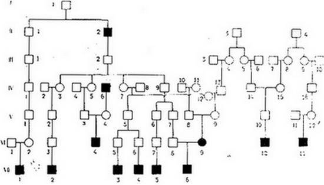
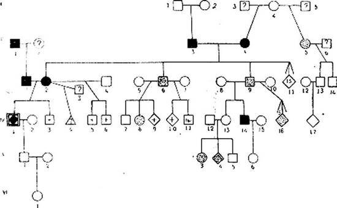
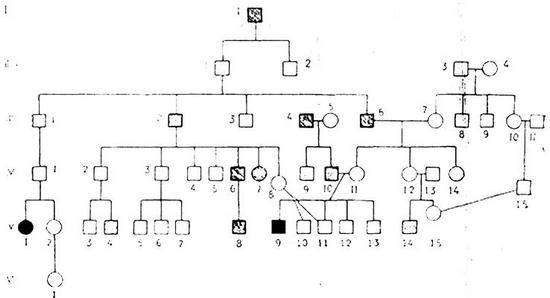

Encoding 1251
Back to Yury Neretin homepage (Engish)
Back
Родословные наших выдвиженцев
Н. К. Кольцов
I
Родословные выдающихся людей – талантов и гениев – представляют огромный интерес для евгеники. Нам важно понять, откуда возникли те психические способности, которые проявляет при жизни выдающийся человек. Мы легко убеждаемся, что среда, в которой он развивался и работал, полученное им воспитание и образование, а также и экономические условия бывают весьма различны; при тех же внешних условиях одновременно с гением развивались и работали тысячи его современников, но огромное большинство их ничем или почти ничем не проявило себя и не оставило потомству памяти о себе. Причиною этого является, конечно, разнообразие психических задатков, с которыми рождаются разные люди, очевидно, столь же различные по врожденным способностям, как по окраске волос, росту, здоровью и другим физическим признакам. Прошли те времена, когда не только наивные обыватели, но и глубокие мыслители выражали уверенность, что гениальная одаренность отдельных личностей представляет собою какое-то мистическое свойство, резко отличающее их от всех других людей, – «дух святой», таинственно сходящий на немногих избранников и пророков. С точки зрения современной евгеники гений обязан своим происхождением счастливой и редкой комбинации наследственных психических задатков.
В наших местах белокурые женщины не представляют редкости, так же как и люди с средними психическими способностями. Но уже значительно реже встречаются женщины с золотистым оттенком тонких, густых и длинных белокурых волос, нежной окраской кожи, с голубыми глазами, стройной фигурой и правильными чертами лица. Мы восхищаемся этими красавицами, как талантами, приблизительно столь же редкими. Но при ближайшем знакомстве мы видим, что большинство этих красавиц обнаруживает целый ряд недостатков как физических (напр., болезненность), так и психических (глупость, дурной характер). Совершенная красавица такая же редкость, как и гений, и, подобно гению, она является редчайшим сочетанием большого числа наследственных задатков. Память о ней сохраняется нередко веками.
Подробное изучение генеалогии такой красавицы даст генетику возможность установить, какие из своих отличительных признаков она получила со стороны отца, какие со стороны матери; вероятно, окажется, что многие из ее рецессивных особенностей были замаскированы доминантными особенностями у ее гетерозиготных родителей, и тогда придется искать проявления их, хотя бы и в других комбинациях, в более ранних поколениях – у ее дедов, прадедов и т. д. Для такого исследования необходимо изучить портреты длинного ряда предков красавицы, и, конечно, такое исследование возможно только для представительницы аристократического рода, где сохранялись изображения длинного ряда поколений в течение столетий. Но если исследователь встретит поразительную деревенскую красавицу и захочет выяснить генетику ее красоты, то по большей части встретится с непреодолимыми трудностями. В лучшем случае он увидит ее отца и мать, может быть, седую престарелую бабушку с огрубелой от многих лет тяжелой работы фигурой, о которой, пожалуй, услышит, что в молодости она была красива – и только. Может, пожалуй, случиться, что оба родителя белокурой красавицы – брюнеты или русые, так как белокурая окраска волос рецессивна и может передаваться по наследству гетерозиготными брюнетами. В таком случае девушка с прекрасными золотистыми волосами и ярко-голубыми глазами покажется как бы выродком в своей семье, и невольно придет в память легенда о Снегурочке, которую Бобыль с Бобылихой слепили себе из снега. Эта легенда того же порядка и, вероятно, того же происхождения, как учение о святом духе, сходящем на гениев и пророков.
Когда мы изучаем родословные талантов и гениев, родившихся в выдающейся семье, о многих членах которой сохранились исторические данные в течение ряда поколений за несколько столетий, мы можем проследить, как в каждом поколении комбинировались те или иные способности родителей. Мы считаем естественной богатую одаренность Владимира Сергеевича Соловьева, этого настоящего «пророка» XIX и ХХ веков, так как знаем, что отец его был одним из величайших русских историков, его братья были также высоко одаренными, а среди предков выделился украинский философ Сковорода. Но появление М. В. Ломоносова, Фарадея, Эдисона и других гениев-самородков нам представляется чудесным, так как история сохранила слишком мало данных об их родителях и их предках. И то немногое, что мы знаем о происхождении этих гениев-выдвиженцев, обесценивается в особенности примитивностью условий их среды, при которых они не могли проявить в сколько-нибудь ясной форме своих высших способностей.
Проявление психических способностей у человека в гораздо большей степени зависит от социальной среды, воспитания и рода деятельности, чем проявление красоты сложения и лица. Конечно, и на развитие женской красоты среда сильно влияет. Две девочки с совершенно одинаковыми наследственными задатками разовьют совершенно различные типы красоты, если одна будет воспитываться в бедной крестьянской семье, а другая в богатой утонченной городской обстановке. У первой от тяжелой работы скоро огрубеют лицо, фигура и руки, но трудовая жизнь на воздухе покроет румянцем ее щеки, разовьет в ней силу и здоровье. При других условиях ее красота могла бы стать более утонченной благодаря целому ряду гигиенических приемов, гигиеническому уходу, уменью одеться к лицу и развитию путем образования интеллектуальных способностей. В графине Шереметевой через несколько лет нельзя было узнать прежнюю крепостную девушку Парашу.
<\blockquote>
Если бы Михайло Ломоносов не дошел до Петербурга, а остался жить на далеком Севере трудовой жизнью своего отца-рыбака и прасола, то человечество не имело бы никаких данных, чтобы подозревать о способностях этого великого гения. Когда мы собираем скудные сведения о предках талантов и гениев, вышедших из бедной трудовой среды, мы всегда останавливаемся перед вопросом: а что было бы, если бы эти люди получили хорошее образование и имели возможность обнаружить свои способности в другой среде, где эти способности могли бы проявиться?
Современная генетика знает немало точно изученных наследственных задатков, фенотипное проявление которых зависит от внешних условий. Наглядным примером является одна мутация плодовой мухи – Drosophila ampelophila, так наз. abnormal abdomen. Ген этой мутации так же стойко и правильно по законам Менделя передается по наследству, как и все другие. Определено и положение его в первой хромосоме близ ее верхнего конца. Однако по внешности мухи далеко не всегда можно с уверенностью определить наличие этого гена, так как фенотипное проявление его в высокой степени зависит от внешних условий. Если анормальных мух АА воспитывают в личиночном состоянии во влажной питательной среде, то все выходящие из них мухи обнаруживают в ясной форме характерный для этой мутации внешний признак – изуродованное брюшко с несимметрично развитыми пластинками. Но если личинок того же самого генотипа АА воспитывать на сухом корме, то из них получается совсем иной фенотип – обычные нормальные мухи. Но эта нормальность их только внешняя, кажущаяся, а на самом деле они сохраняют свой порочный генотип AA, и при скрещиваньи их между собой можно на влажном корме получить от них все сплошь потомство с ненормальным брюшком, в то время как от настоящих нормальных мух генотипа аа ни при каких условиях потомства с ненормальным брюшком не получишь. Отсюда ясно видно, что даже для мух недостаточно получить от родителей определенный наследственный генотип; необходимы, сверх того, известные условия, определенное воспитание, чтобы этот генотип проявился внешне в характерном для него фенотипе.
Еще один наглядный пример можно привести из области животноводства. Молочность коровы определяется в значительной степени наследственными свойствами. Наши русские крестьянские коровенки дают обычно в год 60 ведер молока, из которого можно получить около 2 пудов масла в год. Если улучшить воспитание телушек, правильно кормить и содержать такую корову, то она даст столько молока, что из него можно получить уже до 4 пудов масла. Коровы улучшенных пород дают до 8 пудов масла, но есть стада, в которых подбор производителей велся особенно тщательно и от лучших коров получается в год по 15 пудов масла. Это – коровы-таланты. За последние годы получены отдельные коровы, дающие исключительно много молока – 25, 30 и 45, а одна даже 50 пудов масла в год. Этих коров мы можем смело назвать – не в обиду человеческим гениям – «гениями молочности». Не приходится сомневаться в том, что и они являются результатом особенно счастливого сочетания наследственных генов молочности. Но также ясно, что для полного развития молочности такой коровы необходимо правильное воспитание и достаточный корм, в противном случае она недоразовьется и будет давать молока не больше, чем средняя корова, а то и меньше, но свои наследственные задатки она все же передаст потомству.
Поэтому правильная генетическая племенная работа может вестись лишь в таком стаде, где все производители правильно воспитываются и хорошо содержатся в течение ряда поколений. Там же, где этого нет, животновод всегда может встретиться с сюрпризами: от заморенной неудойной матери со случайно высоким генотипом он может получить очень ценную корову-производительницу, а от коровы, фепотипно-развитой и молочной, несмотря на плохой генотип, получит посредственное даже при хороших условиях потомство.
Врожденные психические способности человека для своего полного фенотипного выражения не в меньшей степени нуждаются в соответствующей внешней среде, чем два вышеуказанных зоологических примера. Картину наследования этих способностей мы можем выяснить только тогда, когда несколько поколений предков талантливого или гениального человека воспитывались, жили и работали в наилучших условиях, при которых их ценный генотип мог полностью проявиться в фенотипе. Наоборот, даже сравнительно полное знакомство с деятельностью предков гениального выдвиженца-самородка часто мало разъясняет происхождение его способностей, если условия, в которых жили его предки, не позволяли их способностям обнаружиться в полной мере.
XIX столетие выдвинуло в России ряд талантливых и гениальных деятелей литературы из состоятельной интеллигентной помещичьей среды. Внешние условия этой среды в высокой мере способствовали фенотипному обнаружению природного литературного таланта, который очень ценился и был в моде в соответствующих кругах. Дети обычно с ранних лет получали литературное воспитание, и их первые же попытки выступить самостоятельно в области литературы и поэзии встречались с вниманием и одобрением окружающими. Большая или меньшая материальная обеспеченность позволяла сделать из поэзии и литературы главное занятие жизни. Поэтому, если, изучая родословные таких семей, мы видим здесь тех или иных членов, нисколько не интересовавшихся литературой и поэзией и не делавших никаких попыток литературного творчества, – мы имеем право заключить, что у них действительно не было соответствующих наследственных задатков или что они были скрыты в их генотипе наличием других генов и что эти задатки проявились у их потомков лишь благодаря счастливой комбинации при скрещивании.
На табл. 1 изображена генеалогия одной из таких русских интеллигентных дворянских семей, может быть, самая замечательная генеалогия литературного таланта не только для нашего народа, но и во всем мире. Эта генеалогия составлена по материалам М. А. Цявловского и демонстрирована им в заседании Русского евгенического общества. Существенно важно уже то обстоятельство, что в этой семье мы видим одновременно двух мировых гениев: А. С. Пушкина и Л. Н. Толстого. Совершенно невероятно, чтобы это обстоятельство было случайностью, так как каждый гений такого калибра приходится на много миллионов населения; очевидно, вся семья характеризуется скоплением очень ценных наследственных задатков, как это действительно подтверждается детальным анализом родословной рода графов Толстых и А. С. Пушкина.
Что мы здесь имеем дело действительно с наследственностью, показывает окружение двух гениев: среди их ближайших родственников мы находим такие крупные таланты, как поэты: Тютчев, Одоевские, Чаадаев, А. К. Толстой и Веневитинов, а также известный филолог Константин Леонтьев. Благоприятная внешняя среда, позволявшая генотипам полностью проявляться в фенотипах, обеспечивала этим высокое качество браков, заключавшихся по большей части в собственной среде, нередко с близкими родственниками, благодаря чему мы и находим в этой генеалогии замечательный отбор особенно ценных генов – настоящий пантеон русской поэзии.

Табл. 1. Генеалогия, составленная по материалам проф. М. А. Цявловского
I. 1. Андрей Толстой.
II. 1. Иван Толстой. 2. Гр. П. А. Толстой – известный государственный деятель, сотрудник Петра I. 3. И. М. Головин – денщик и сподвижник Петра I. 4. В. И. Приклонский.
III. 1. Б. И. Толстой. 2. Гр. И. П. Толстой. 3. Кн. Ю. Ю. Трубецкой. 4. О. И. Головина – кн. Трубецкая. 5. Е. И. Головина-Пушкина. 6. А. П. Пушкин. 7. В. И. Чичерин. 8. Л. В. Приклонская-Чичерина. 9. А. В. Приклонская-Оболенская. 10. Кн. А. А. Оболенский.
IV. 1. В. Б. Толстой. 2. И. П. Леонтьев. 3. А. И. Толстая-Леонтьева. 4. П. В. Чаадаев. 5. М. И. Толстая-Чаадаева. 6. Кн. М. М. Щербатов, историограф. 7. П. И. гр. Толстая – кн. Одоевская. 8. Кн. В. И. Одоевский. 9. Гр. А. И. Толстой. 10. Кн. С. Ф. Волконский. 11. М. Д. Чаадаева – кн. Волконская. 12. В. И. кн. Одоевская-Волконская.13. Кн. Д. Ю. Трубецкой. 14. Л. А. Пушкин. 15. О. В. Чичерина-Пушкина. 16. Кн. Н. А. Оболенский.
V. 1. Л. В. Толстой. 2. Б. И. Леонтьев. 3. Я. П. Чаадаев. 4. H. М. кн. Щербатова-Чаадаева. 5. Кн. С. И. Одоевский. 6. Гр. П. А. Толстой. 7. Гр. И. А. Толстой. 8. Кн. Н. С. Волконский. 9. Е. Д. кн. Трубецкая – кн. Волконская. 10. С. Л. Пушкин. 11. В. П. Веневитинов. 12. А. Н. кн. Оболенская-Веневитинова.
VI. 1. И. Н. Тютчев. 2. Е. Л. Толстая-Тютчева. 3. Н. Б. Леонтьев. 4. П. Я. Чаадаев, писатель и философ, друг Пушкина и Грибоедова, прототип Чацкого. 5. Кн. И. С. Одоевский. 6. Кн. Ф. С. Одоевский. 7. Гр. К. П. Толстой. 8. Гр. Н. И. Толстой. 9. М. Н. кн. Волконская – гр. Толстая, прототип кн. Марии Болконской в «Войне и мире». 10. Александр Сергеевич Пушкин. 11. Д. В. Веневитинов, поэт.
VII. 1. Ф. И. Тютчев – поэт-мыслитель. 2. К. Н. Леонтьев, писатель-славянофил. 3. Кн. А. И. Одоевский – поэт-декабрист. 4. Кн. В. Ф. Одоевский – писатель-мыслитель. 5. Гр. А. К. Толстой поэт. 6. Лев Николаевич Толстой.
Но, конечно, совсем иная картина обнаружилась бы, если бы эта исключительная по своей ценности семья развивалась в иной среде, например, если бы родоначальники ее были крепостными и вели тяжелую борьбу за материальное существование. При таких условиях поэтический талант ценился бы мало, для борьбы за жизнь требовались бы совсем иные способности – физическая сила, здоровье, приспособляемость. Большинство талантливых поэтов оказалось бы плохими земледельцами; они не могли бы развить в полной мере своего поэтического таланта, может быть, остались бы неграмотными и, вероятно, не оставили бы имени потомству. Некоторые оказались бы типичными жизненными неудачниками, неприсобленными к окружающей их среде. Гении, как А. С. Пушкин и Л. Н. Толстой, конечно, выдвинулись бы и при таких условиях и проявили бы огромную мощь своего генотипа, но характер их деятельности и содержание их произведений были бы, конечно, совсем иными. И мы с удивлением спрашивали бы себя, откуда взялись эти гениальные выдвиженцы-самородки.
В дальнейшем изложении я пытаюсь осветить загадку появления пяти наших выдающихся современников-выдвиженцев: А. М. Пешкова, Ф. И. Шаляпина, Сергея Есенина, Л. Леонова и Н. П. Кравкова. Материалами для выяснения генеалогии первых трех мне послужили опубликованные ими автобиографии. Сведения по генеалогии покойного Н. П. Кравкова мне были доставлены его родственниками и отчасти уже использованы мною для биографического очерка. Сведения о семье Л. Леонова мне сообщил лично сам писатель.
II. Максим Горький
Четыре книги воспоминаний автобиографического характера, написанные Максимом Горьким, принадлежат к числу лучших его произведений и, по-моему, являются перлами русской литературы. Может возникнуть вопрос: вправе ли мы использовать для научных выводов художественное произведение большого поэта-писателя? Мы всегда должны иметь в виду, что даваемые им характеристики отдельных личностей – носят на себе отпечаток его художественной фантазии. Но в отношении фактов автор очень старается быть правдивым. Все имена приводятся полностью, и автор оговаривает, когда по отношению к случайно встретившимся людям он не с полной уверенностью вспоминает имя и фамилию. Специальностью художественного таланта М. Горького всегда являлось проникновенное отыскивание ценных задатков у задавленных жизнью, опустившихся или не сумевших подняться людей. Эта особенность очень ценна для исследователя, задавшегося целью восстанавливать врожденные генотипы, освобождая их от прикрывающей фенотипной скорлупы. Мы не имеем никаких оснований сомневаться в искренности автора и подозревать, что он сознательно, из желания приукрасить своих предков, поставил их на слишком высокие ходули. С беспощадным реализмом он отмечает все отрицательные стороны их поведения и их характера. Он ярко рисует ту некультурную, жестокую обстановку, в которой он родился и воспитывался. Почти все окружавшие его и его родственники пьянствовали, многие запойно. Жестокость царила потрясающая: отцы избивали до бесчувствия детей, мужья – жен, иногда буквально до смерти. Всюду царил разврат с грубым циническим отношением к женщине, самое отчаянное сквернословие. В книге видели часто врага, и большинство окружавших мальчика Алешу всю жизнь оставались безграмотными.
«Весь Гостиный двор, все население его, купцы, приказчики, жили странной жизнью, полной глуповатых по-детски, но всегда злых забав. Если приезжий мужик спрашивал, как ближе пройти в то или иное место города, ему всегда указывали неверное направление, – это до такой степени вошло у всех в привычку, что уже не доставляло удовольствия обманщикам. Поймав пару крыс, связывали их хвостами, пускали на дорогу и любовались тем, как они рвутся в разные стороны, кусают друг друга, а иногда обольют крысу керосином и зажгут ее. Навязывали на хвост собаке разбитое железное ведро, собака в диком испуге, с визгом и грохотом, мчалась куда-то; люди смотрели и хохотали».
Сам Алексей прошел через огонь и медные трубы, периодически голодал, претерпевал побои и унижения, жил под открытым небом и в жалких подвалах, деля пищу с крысами и собаками. И даже тогда, когда юношей отправился в Казань с определенным намерением попасть в университет, должен был вместо подготовки к экзамену заняться тяжелым трудом булочника и ежедневно месить по 15 пудов теста, конечно, не имея времени на чтение книг и самообразование. Он был мальчиком на побегушках, мусорщиком, торговцем, грузчиком, булочником, сторожем, непрерывно меняя десятки занятий наименее квалифицированного характера. Среда сделала все, чтобы заглушить ценные врожденные задатки А. М. Пешкова, повернуть его на путь бродяжничества и социального отщепенства, который он так хорошо знал и описывал. И если после всей этой бурной жизни он все-таки сделался блестящим писателем, имя которого пользуется огромной популярностью среди широких народных масс не только у нас, но и во всем мире, то причину этого изумительного явления мы должны искать не во внешних условиях, а в тех наследственных задатках, которые он получил от своих предков и которые выделили его из других представителей той же среды, оставшихся на дне и кончивших пьянством, преступлением, нищетой и самоубийством.
Табл. 2 представляет генеалогию Алексея Максимовича Пешкова, поскольку она была известна ему самому. Вероятно, эту генеалогию никогда уже не удастся пополнить сведениями о более ранних поколениях.
А. М. Пешков лучше всего из предков знал своего деда и бабку со стороны матери, у них он воспитывался, и им он дает наиболее полные характеристики в своем «Детстве». Поэтому общий обзор генеалогии всего удобнее начать именно с них.
Дед Горького (II 3) был Василий Васильевич Каширин, нижегородский мещанин; он родился в 1800 г. Об его отце (I, 1) мы знаем только то, что он был убит разбойниками, приехавшими в Балахну грабить купца Заева. «Дедов отец бросился на колокольню бить набат, а разбойники настигли его, порубили саблями и сбросили вниз с колокольни». Значит был смелый, решительный человек, готовый впереди других делать общественное дело.
Мать В. В. Каширина (I, 2) была энергичной сильной женщиной. Сын рассказывает про нее: «Она на себе мешок муки таскала по пяти пудов веса, силища у нее была не женская, до двадцати годов меня за волосья таскала очень легко». По отзыву бабушки Акулины, – бесконечно доброй и благожелательной в своих отзывах о людях, – «была она калачница и злой души баба, не тем будь помянута… эх-ма, что нам про злых вспоминать. Господь и сам их видит. Он их видит, а бесы любят». А сын рассказывает про мать, что она «тихонько пиво варила и продавала». Ее практический ум сказался в том, как она выбрала жену для сына. «Видит, – рассказывает бабушка Акулина, – работницая, нищего человека дочь, значит, смирной буду»… Выбор действительно оказался исключительно удачным.

Табл. 2. Генеалогия А. М. Пешкова (Максима Горького, IV, 1).
В. В. Каширин наследовал энергию обоих родителей, смелость отца, практический ум, но также злобный характер матери. Это – типичный активный выдвиженец. Сам он говорит про себя внуку: «Меня, Олёша, так били, что ты этого и в страшном сне не увидишь… А что вышло? Сирота, нищей матери сын, я вот дошел до своего места, – старшиной цеховым сделан, начальник людям»…
Свою карьеру он начал тем, что «в молодости сам, своей силой супротив Волги баржи тянул… Трижды Волгу-мать вымерял… А на четвертый год уже водоливом пошел, – показал хозяину разум свой». И бабушка гордилась в то время своим женихом: «Заметный парень был: двадцать два года, а уж водолив». Выдвиженец быстро продвигается дальше. В. Каширин переходит в город (Н. Новгород), устраивает красильную мастерскую, богатеет. Ко времени брака дочери он достигает вершины своей карьеры. «Дедушка-то наш о ту пору богач был, – рассказывает бабушка, – дети-то еще не выделены, четыре дома у него, и деньги, и в чести он, незадолго перед этим дали ему шляпу с позументом, да мундир – за то, что он девять лет бессменно старшиной в цехе сидел, гордый он был тогда»…
Внук уже не застал деда в славном периоде интенсивной работы. Старику было около 80 лет, когда у него поселился Алеша. По внешности это был «небольшой сухонькой старичок, в черном длинном одеянии, с рыжей, как золото, бородой, с типичным носом и умными хорошими глазами». И хотя он был еще бодр, но с годами, естественно, сильно опустился. Были крупные хозяйственные неудачи, тяжелые и страшные невзгоды с сыновьями. Дед всегда был крутого нрава, а тут совсем озлобился. Он часто зверски избивал Алексея, смертным боем бил сыновей, работника и даже старуху-бабушку. Пьяницей, однако, по-видимому, не был. По крайней мере, М. Горький не отмечает, чтобы он когда-либо видел деда пьяным.
Неудивительно, что личные впечатления внука были самые отрицательные. И недаром бабушка неоднократно предостерегала его не судить о деде по этим впечатлениям. «Он ведь раньше-то больно хороший был, дедушка наш, да как выдумал, что нет его умнее, с той поры и озлился и глупым стал». «Дедушка, когда хотел, так хорошо говорил, это уже после, по глупости стал на замок сердце запирать».
Но смышленый и чуткий не по годам внук и сам порою умел разбирать, что осталось хорошего в его злом деде. Чудесно описана сцена, как дед, только что в первый раз жестоко избивши Алешу, пришел с ним мириться. После его первых слов, несмотря на то что он принес гостинцы и игрушку, внуку «очень хотелось ударить его ногой, но было больно пошевелиться». А потом дед стал рассказывать о своей молодости, о жизни бурлаков на Волге… Рассказывал он великолепно, художественно. «Говорил он и быстро, как облако, рос в глазах внука, превращался из маленького сухого старика в человека силы сказочной, – он один ведет против реки огромную серую баржу». Беседа затянулась до вечера, и дед покорил детское сердце. Во время этой долгой беседы в комнату, где лежал на постели изувеченный мальчик, несколько раз заглядывали, но внук просил: «Не уходи», и дед, усмехаясь, отмахивался от людей. И когда наконец ушел, ласково простясь, Алеша «знал, что дедушка не злой и не страшен».
Когда я читаю эту удивительную сцену, приходит в память другая сцена из Шекспира, когда Ричард III покоряет сердце королевы Анны над гробом убитого им ее мужа. Здесь нет той красивой рыцарской обстановки, но характер – генотипы – очень близки. Различие в пользу Каширина: он искренен, по-своему любит внука, а в искренности любви Ричарда еще можно сомневаться.
Впрочем, дед не всегда был искренним и, как человек практического ума, считал постоянную искренность недостатком. Он сам учил внука: «Будь хитер, это лучше, а простодушность – та же глупость, – понял? Баран простодушен»…
Внук прислушивался к советам умного деда. Мальчик задумал как-то устроить себе хижину в саду, в яме. Дед увидел, похвалил ловкую работу, сам помог, обещал посадить вокруг подсолнухи, мальвы и закончил советом: «Это очень полезно, что ты учишься сам для себя устраивать лучше». – «Я очень ценил его слова», – говорит по этому поводу М. Горький.
Образования старик Каширин не получил никакого, но грамоту знал хорошо, по крайней мере славянскую. Ей сам и обучил внука. Сцена, когда суровый дед учит внука азбуке и оба стараются перекричать друг друга, художественно-красива: такого старика нельзя назвать злобным. Хорошо понимал необходимость учения, ежедневно читал книги, преимущественно духовные, и очень бережно относился к ним.
Будучи уже восьмидесяти лет, В. В. Каширин сам вел свои хозяйственные дела, помогал сыновьям устраивать мастерские и сам был готов, отдав им свое дело, открыть новую красильную мастерскую. Но неудачные спекуляции поглотили его состояние, он мало-помалу совсем обнищал, опустился, стал жалким скрягой, попрошайничал и кончил жизнь полусумасшедшим нищим. «Когда бабушка успокоилась уже навсегда, дед ходил по улицам города нищий и безумный, жалостно выпрашивая под окнами: «Повара мои добрые, подайте пирожка кусок, пирожка-то мне бы. Эх, вы-и»…
Но характеристика опустившегося 90-летнего старика нас здесь не может интересовать. Она любопытна только с точки зрения патологии старости, как пример старческого разложения психики. Отыскивать здесь те или иные проявления генотипа было бы слишком трудно и неосторожно.
Максим Горький долго останавливается на религиозности своего деда и в анализе его ищет указаний на основные черты его характера. Мне кажется, однако, что и здесь следует сделать поправку на возраст. В известной среде к 80 годам старик обычно становится особенно религиозным, хотя бы в расцвете сил он самым равнодушным образом относился к религии. Но, конечно, врожденные особенности природы каждого человека не могут не наложить отпечатка на характер старческой религиозности. Впрочем, может быть, в данном случае религиозность была теснее связана с характером В. В. Каширина: ведь псалтир-то он, конечно, выучил наизусть в молодости. Внуку очень не нравился сухой формализм религии деда, чтение затверженных молитв с боязнью опустить какое-либо положенное слово. «Дедов Бог вызывал у ребенка страх и неприязнь: Он не любил никого, следил за всем строгим оком, Он прежде всего искал и видел в человеке дурное, злое, грешное. Было ясно, что Он не верит человеку, всегда ждет покаяния и любит наказывать»…
В. В. Каширин, как и все другие самостоятельно мыслящие люди, брал из господствующей религии только то, что подходило к его характеру и наклонностям: он создавал себе бога по своему образу и подобию. Христос с его любвеобильной моралью был совершенно чужд ему. Его бог, как и сам он, строгий хозяин, организатор, ведущий большое дело и беспощадно карающий негодных работников, так как нет иного средства их исправить. Таким был и сам дед в своей жизни.
Правда, дело у него было небольшое. Но если бы он получил лучшее образование и попал в условия оживленного расцвета экономической жизни, из него мог бы выработаться крупный хозяйственный организатор. Он сам сумел бы найти для этого капиталы, как нашли и создали их его более удачливые современники, сделавшиеся из неимущих крестьян и мещан большими капиталистами, промышленниками, фабрикантами. Сношения с людьми иной среды навели бы культурный лоск на его грубый и жестокий нрав. Врожденные способности практического организатора-индивидуалиста у деда, несомненно, были.
Бабушка по матери, Акулина Ивановна Каширина (II 4), по некоторым основным чертам походила на деда, по другим резко от него отличалась. О своем происхождении она рассказывала внуку следующее:
«Я сиротой росла, матушка моя бобылкой была, увечный человек, еще в девушках ее барин напугал. Она ночью со страху выкинулась из окна, да бок себе и перебила, плечо ушибла тоже, с того у нее рука правая, самонужная, отсохла, а была она, матушка, знатная кружевница. Ну, стала она барам ненадобна и дали ей вольную, – живи-де, как сама знаешь, а как без руки-то жить? Вот она и пошла по миру, за милостью к людям, а в та пора люди-то богаче жили, добрее были – славные балахонские плотники, да кружевницы, все напоказ народ. Ходили бывало мы с ней, с матушкой, зимой – осенью по городу, а как Гаврило-архангел мечом взмахнет, зиму отгонит, весна землю обымет, – так мы подальше, куда глаза поведут. В Муроме бывали и в Юрьевце, и по Волге вверх, и по тихой Оке. Весной-то и летом хорошо по земле ходить, земля ласковая, трава бархатная. Пресвятая Богородица цветами осыпала поля, тут ли тебе радость, тут ли сердцу простор. А матушка-то бывало, прикроет синие глаза да как заведет песню на великую высоту, – голос у ней не силен был, а звонок, – и все кругом будто задремлет, не шелохнется, слушает ее. Хорошо было Христа-ради жить. А как минуло мне девять лет, зазорно стало матушке по миру водить меня, застыдилась она и осела на Балахне, куваркается по улице из дома в дом, а на праздниках – по церковным папертям собирает. А я дома сижу, учусь кружева плести, тороплюсь учусь, хочется скорее помочь матушке-то. Бывало не удается чего, слезы лью. В два года с маленьким, гляди-ка ты, научилась делу, да и в славу по городу вошла: чуть кому хорошая работа нужна, сейчас к нам: ну-ка, Акуля, встряхни коклюшки. А я и рада, мне праздник. Конечно, не мое мастерство, а матушкин указ. Она хоть и об одной руке, сама-то не работница, так ведь показать умела. А хороший указчик дороже десяти работников. Ну, тут загордилась я: ты, мол, матушка, бросай по миру собирать, теперь я тебя сама-одна прокормлю»…
Образ матери Акулины Ивановны (I 4) нам ясен из этого художественного рассказа. Но кто был ее отец? Когда с искусной кружевницей случилось несчастие, сделавшее ее нетрудоспособной калекой на всю жизнь, она была незамужней, после получила вольную, могла сама собой распоряжаться. Кто же женился бы на безрукой нищей, хотя бы и красавице? Такой брак мог бы быть только незаурядным романом, и о подробностях его не могла не знать романтически настроенная дочь. Вероятнее всего, прабабушка Горького так и осталась незамужней «бобылкой», и Акулина – ее незаконная дочь! Может быть, отцом ее и был тот «барин», который так «напугал» ее мать.
Горький вспоминает также о сестре своей бабушки, Матрене Ивановне, злобной, сварливой старухе. Может быть, это была одноутробная сестра, хотя в воспоминаниях о своем детстве Акулина Ивановна ни словом не говорит о сестре, которая очень осложнила бы обстановку далеких странствований за куском хлеба. Сходство отчеств Матрены и Акулины нельзя истолковать в том смысле, что они были родными и по отцу, так как незаконнорожденным часто дается это ходячее отчество. А может быть, это была только двоюродная сестра. Пока мне этого не удалось разъяснить. Во всяком случае, имеется высокая вероятность, что происхождение Акулины Ивановны межсословное, что нередко наблюдается в родословных выдвиженцах, как мы увидим и на примере Н. П. Кравкова.
Бабушка (я буду так называть Акулину Ивановну, так как этим именем ее называл Алеша Пешков и другой бабушки он не знал) была в одном отношении под пару своему предприимчивому, энергичному мужу: у нее было в той же степени сильно влечение к деятельности, к работе. В молодости она, конечно, была такой же сильной и ловкой, как он. Здоровье и крепость сохранились у нее до старости. Когда дед обнищал, она не только сама для себя доставала средства к жизни, но временами кормила мужа и внучат, вечно двигалась, хлопотала. Она любила жить, двигаться, трудиться. Опасное жизненное положение вызывало у нее не страх и не растерянность, а немедленные решительные поступки. Занялся пожар в красильной мастерской, наполненной химическими продуктами. Все растерялись, но не бабушка:
«Накинув на голову пустой мешок, обернувшись попоной, она бежала прямо в огонь и сунулась в него, вскрикивая:
– Купорос, дураки! Взорвет купорос…
– Григорий, держи ее! – выл дедушка. – Ой, пропала…
Но бабушка уже вынырнула, вся дымясь, мотая головой, согнувшись, неся на вытянутых руках ведерную бутыль купоросного масла.
– Отец, лошадь выведи! – хрипя, кашляя, кричала она. – Снимите с плеч-то, горю, али не видно!..
Григорий сорвал с плеч ее тлевшую попону и, переламываясь пополам, стал метать лопатою в дверь мастерской большие комья снега; дядя прыгал около него с топором в руках; дед лежал около бабушки, бросая в нее снегом; она сунула бутыль в сугроб, бросилась к воротам, отворила их и, кланяясь вбежавшим людям, говорила:
– Амбар, соседи, отстаивайте! Перекинется огонь на амбар, на сеновал, – наше все дотла сгорит, и ваше займется! Рубите крышу, сено – в сад. Григорий, сверху бросай, что ты на землю-то мечешь! Яков, не суетись, давай топоры людям, лопаты! Батюшки-соседи, беритесь дружней, – Бог нам на помочь.
Она была так же интересна, как и пожар; освещаемая огнем, который словно ловил ее, черную, она металась по двору, всюду поспевая, всем распоряжаясь, все видя.
На двор выбежал Шарап, вскидываясь на дыбы, подбрасывая деда; огонь ударил в его большие глаза, они красно сверкнули: лошадь захрапела, уперлась передними ногами; дедушка выпустил повод из рук и отпрыгнул, крикнув:
– Мать, держи!
Она бросилась под ноги взвившегося коня, встала пред ним крестом; конь жалобно заржал, потянулся к ней, косясь на пламя.
– А ты не бойся! – басом сказала бабушка, похлопывая его по шее и взяв повод. – Али я тебя оставлю в страхе этом? Ох, ты, мышонок…
Мышонок, втрое больший ее, покорно шел за нею к воротам и фыркал, оглядывая красное ее лицо…
Пожар кончился.
Дед вошел, остановился у порога и спросил:
– Мать?
– Ой?
– Обожглась?
– Ничего!
Он зажег серную спичку, осветив синим огнем свое лицо хорька, измазанное сажей, высмотрел свечу на столе и, не торопясь, сел рядом с бабушкой.
– Умылся бы, – сказала она, тоже вся в саже, пропахшая едким дымом.
Дед вздохнул:
– Милостив Господь бывает до тебя, большой тебе разум дает…
И, погладив ее по плечу, добавил, оскалив зубы:
– На краткое время, на час, а дает!
Она встала и ушла, держа руку перед лицом, дуя на пальцы, а дед, не глядя на меня, тихо спросил:
– Весь пожар видел, сначала? Бабушка-то как, а? Старуха, ведь… Бита, ломана… То-то же! Эх, вы-и…»
Тотчас же после пожара бабушке пришлось принимать ребенка у внезапно от испугу родившей снохи и присутствовать при ее смерти. Ночью в комнату, где спал внук, «дверь очень медленно открылась, в комнату вползла бабушка, притворила дверь плечом, прислонилась к ней спиною и, протянув руки к синему огоньку неугасимой лампады, тихо, по-детски жалобно, сказала:
– Рученьки мои, рученьки больно»…
В борьбе с общей бедой бабушка была первой среди всех ее окружавших, как героиня классической трагедии. Вот уже подлинно буквально, как сказал поэт про русскую женщину:
Коня на скаку остановит,
В горящую избу войдет.
Можно подумать, что эмоция страха вовсе не известна бабушке. Собирая с внуком грибы в лесу, она встречается с волком:
«Сидя на тропе, она спокойно срезает корни грибов, а около нее, вывесив язык, стоит серая, поджарая собака.
– А ты иди, иди прочь! – говорит бабушка. – Иди с Богом!
Незадолго перед этим Валек отравил мою собаку; мне очень захотелось приманить эту, новую. Я выбежал на тропу, собака странно изогнулась, не ворочая шеей, взглянула на меня зеленым взглядом голодных глаз и прыгнула в лес, поджав хвост. Осанка у нее была не собачья, и, когда я свистнул, она дико бросилась в кусты.
– Видал? – улыбаясь, спросила бабушка. – А я вначале опозналась, думала – собака, гляжу – ан клыки-то волчьи, да и шея тоже! Испугалась даже: ну, говорю, коли ты волк, так иди прочь! Хорошо, что летом волки смирены»…
На улице озорной парень и ребята подзадоривают Алешу показать храбрость, просидеть ночь на кладбище у незакопанного гроба: все вокруг верят, что покойник-старик дурной славы – по ночам встает из гроба и ходит по кладбищу. Бабушка тут же: она верит в домовых и оборотней. Можно было бы ожидать, что она остановит любимого внука; наоборот, она только спокойно говорит:
– Пальтишко надень, да одеяло возьми, а то к утру холодно станет, – и ее слова возбуждают у внука надежду, что ничего страшного с ним не случится.
Утром бабушка сама пришла на кладбище, разбудила заснувшего у гроба мальчика.
– Вставай. Не озяб ли? Ну, что, страшно?
– Страшно, только ты никому не говори про это, ребятишкам не говори.
– А почто молчать? – удивилась она. – Коли не страшно, так и хвалиться нечем…
Пошли домой, и дорогой она ласково говорила:
– Все надо самому испытать, голуба душа, все надо самому знать… Сам не научишься – никто не научит…»
Если в отношении общей активности дед и бабушка были одарены от природы одинаково, то по другим, также, конечно, врожденным влечениям и по эмоциональности они были резко, почти диаметрально различны. Дед, по крайней мере в старости, был черствый эгоист, угрюмый, подозрительный, скупой и нелюдимый, жестокий, властный, с огромным самомнением – типичный схизоид, по Кречмеру. Бабушка – общительная, веселая, воплощенная доброта: ее темные глаза были «полны сиянием неистребимой любви к людям», превосходный пример ясно выраженного циклоидного типа.
Очень характерной чертой бабушки являются ее любовь к жизни, жизнерадостность. Уже совсем старенькая, живущая после разорения мужа нищенством, она все же после рассказа внука о красивой барыне, дававшей ему книги, горячо восклицает: «Господи, Господи! хорошо то все как! Жить я согласна веки-вечные».
Бабушка временами любила выпить; дважды – в тяжелые периоды жизни, когда боялась сначала за судьбу сына, а потом за дочь, – даже запила. Но и в опьянении, когда сдерживающие силы интеллекта ослабевают и человек наиболее ярко проявляет особенности своего темперамента, она оставалась по-прежнему доброй и веселой.
«Выпивши, она становилась еще лучше: темные ее глаза, улыбаясь, изливали на всех греющий душу свет, и, обмахивая платком разгоревшееся лицо, она певуче говорила:
– Господи, Господи! Как хорошо все! Нет, вы глядите, как хорошо-то все!
Это был крик ее сердца, лозунг всей жизни».
Бабушку упросили поплясать.
«Бабушка не плясала, а словно рассказывала что-то. Вот она идет тихонько, задумавшись, покачиваясь, поглядывая вокруг из-под руки, и все ее большое тело колеблется нерешительно, ноги щупают дорогу осторожно. Остановилась, вдруг испугавшись чего-то, лицо дрогнуло, нахмурилось и тотчас засияло доброй приветливой улыбкой. Откачнулась в сторону, уступая кому-то дорогу, отводя рукой кого-то; опустив голову, замерла, прислушиваясь, улыбаясь все веселее, – и вдруг ее сорвало с места, закружило вихрем, вся она стала стройней, выше ростом, и уж нельзя было глаз отвести от нее, – так буйно-красива и мила становилась она в эти минуты чудесного возвращения к юности!»
Незлобивость бабушки, ее готовность покориться, не противиться злу насилием (там, где это зло направлено лично против нее) порой даже сердят внука. «Иногда меня трогает за сердце эта слепая, все примиряющая доброта, а иногда очень хочется, чтобы бабушка сказала какое-то сильное слово, что-то крикнула». Внук спрашивал бабушку, как это она, сама сильная, позволяет деду себя бить.
Все вокруг любили бабушку, доброта которой была лучом света в темном, жестоком царстве. Работник Цыганок заявляет: «Я всех Кашириных, кроме бабани, не люблю, пускай их демон любит». Постоялец «Хорошее дело» говорит Алеше: «Хороша у тебя бабушка, о, какая земля». А мастер Григорий внушает мальчику: «Бабушка неправду не любит, не понимает. Она вроде святой, хоть и вино пьет, табак нюхает. Ты держись за нее крепко». Внук впрямь считает бабушку святой. У них заходит разговор о гниении трупов:
– Все гниют?
– Все. Только святых минует это…
– Ты не сгниешь!
«И все более удивляла меня бабушка, – пишет внук: – я привык считать ее существом высшим из людей, самым добрым и мудрым на земле, а она неустанно укрепляла это убеждение».
Внук трогательно описывает, как бабушка водила его совершать обряд «тихой милостыни»: ночью, никем не замеченная, разносила по домам, которые были еще беднее ее, хлеб и иное подаяние. «Каждый раз, как у нее скоплялось немножко денег от продажи грибов и орехов, она раскладывала их под окнами «тихой милостыней», а сама даже по праздникам ходила в отрепье, в заплатах. Когда бабушка умерла, А. Пешков узнал о ее смерти через семь недель после смерти, из письма, присланного его двоюродным братом. В кратком письме – без запятых – было сказано, что бабушка, собирая милостыню на паперти церкви и упав, сломала себе ногу. На восьмой день прикинулся антонов огонь. Внуки: оба брата и сестра с детьми – здоровые, молодые люди – сидели на шее старухи, питаясь милостыней, собранной ею. У них не хватило разума позвать доктора. В письме было сказано: «Схоронили ее на Петропавловском где все наши провожали мы и нищие они ее любили и плакали».
В области интеллектуальных способностей следует отметить высокий поэтический талант бабушки и ее своеобразную религиозность.
Бабушка глубоко активно чувствовала красоту природы. На пароходе восторгается видами. «Ты гляди, как хорошо-то! – говорит ежеминутно бабушка, переходя от борта к борту, и вся сияет, а глаза у нее радостно расширены. – Вот он, батюшка, Нижний-то. Вот он каков, Богов. Церкви-те, гляди-ка ты, летят, будто. Варюша, погляди, чай, а? порадуйся».
При великолепной памяти хорошо знала народную поэзию. Была она неграмотной и запоминала со слуха, жадно слушала песни нищих, слепых; воспроизводила она их превосходно, была выдающейся «сказительницей» и, конечно, не пассивно передавала то, что только услышала, а творила сама, активно участвуя в создании народной поэзии. Фантазия у нее была богатая, язык образный, и, когда она рассказывала внуку события из прошлой жизни, она облекала свой рассказ в художественную форму, и трудно было разобрать, при всей ее глубокой правдивости, где кончается точное изложение фактов и начинается поэтический творческий вымысел. Внук вырос под обаянием рассказов, сказок и песен бабушки, прошел жизненную художественную школу. Но не только мальчик, и взрослые образованные люди попадали под обаяние бабушкиной поэзии. М. Горький рассказывает, как однажды разрыдался, слушая сказания бабушки, один интеллигент «Хорошее дело».
Религия бабушки та же поэзия, насыщенная бесконечной любовью к людям. Церковного в ней очень мало. Бабушка совсем плохо разбирается в догматах церкви, в священной истории. Она готова поверить, что Матерь Божья побывала в Рязани. Церковными службами, святыми угодниками мало интересуется. Зато в бесов, домовых верит и сама видывала их. Шутливо говорит деду, строго выполняющему церковную формалистику: «А скушно, поди-ка, Богу-то слушать моление твое, отец, – всегда ты твердишь одно и то же». Сама она не любит затверженных молитв, хотя много молится и утром и вечером. Ребенок слушал и позднее по памяти записал ее моления. Это было непрерывное поэтическое творчество, простой, от души разговор с богом; «всегда молитва ее была акафистом, хвалою искренней и простодушной. Она почти каждое утро находила новые слова хвалы», каждый вечер рассказывала богу о всех событиях дня и о своем отношении к ним, вела, в сущности, дневник, глубокий и художественный. Бог, которого создала себе бабушка, был светлый, радостный бог, исполненный великой жалостью к человечеству и готовый всячески помочь людям, по мере сил и возможности.
«Да поди-ка, и сам-то Господь не всегда в силах понять, где чья вина.
– Разве Бог не все знает? – спросил я удивленный, а она тихонько и печально ответила:
– Кабы все-то знал, так бы многого, поди, люди-то и не делали. Он, чай, Батюшка, глядит, глядит с небеси-то на землю, на всех нас, да в иную минуту как восплачет, да как возрыдает: «Люди вы Мои милые, Мои люди, ох, как Мне вас жалко!»
Она сама заплакала и, не отирая мокрых щек, отошла в угол молиться».
Не подлежит сомнению, что Акулина Ивановна Каширина была одной из самых выдающихся по своей духовной природной одаренности женщин, соединяя в себе энергию, практический ум, высокий альтруизм и художественный талант. Тяжелые внешние условия и отсутствие образования сузили круг ее деятельности, и она прошла бы бесследно в истории человечества, если бы внук, получивший по наследству от нее самые ценные гены, не обессмертил ее светлого образа в своем прекрасном произведении, относящемся к лучшим перлам мировой литературы. Нельзя себе представить такой среды, такой обстановки, при которой она не сумела бы проявить своих душевных способностей и осталась бы средней, незамеченной. Она могла бы быть и великой артисткой, как Комиссаржевская, и поэтессой, и человеколюбицей – вторым д-ром Гаазом. Она была одной из тех, которые рождаются единицами на многие тысячи женщин. Евгенисту трудно найти лучший пример великого могущества среды, которая порою самому ценному генотипу не позволяет выявиться в сколько-нибудь соответствующем его ценности фенотипе.
В 1820–1821 гг. двадцатилетний водолив Василий Каширин женился на четырнадцатилетней кружевнице Акулине. Уже через год у нее родился ребенок, за ним другой – всего 18 детей. Но только трое из них выжили и могли проявить свои генотипы. Так как родители сами были, очевидно, гетерозиготами по целому ряду доминантных признаков, а по ряду признаков были резко различны между собой (один схизоид, другая – циклоид), то естественно, что уже в первом поколении F1 должно было произойти сложное расщепление. Примем, – даже не в виде рабочей гипотезы, а только для примера, – что энергичный темперамент определяется генами А1 и а2, схизоидные элементы характера – генами В1 и b2, а циклоидные – С1 и с2, человеколюбие – D1 и d2, развитие центра речи – Е1 и е2, практический ум – F1 и f2, поэтический талант – G1 и g2. В таком случае генотипическая формула для деда окажется:
A1a1a2a2 B1b1b2b2 c1c1C2c2 d1d1D2d2 E1e1e2e2 F1f1f2f2 g1g1G2g2
А генотип бабушки:
A1a1a2a2 b1b1B2b2 C1c1c2c2 D1d1d2d2 E1e1e2e2 F1f1f2f2 G1g1g2g2
При этих условиях мы можем ожидать у их детей не только расщепления и сложного смешения тех признаков, по которым дед и бабушка различались друг от друга, но также и не полного проявления тех признаков, по которым оба они были схожи. Напр., в результате скрещивания A1a1a2a2 ? A1a1a2a2 могут получиться генотипы a1a1a2a2, т. е. с неполным проявлением энергичного темперамента. Такое расщепление, по-видимому, действительно имело место по отношению к обоим сыновьям – Михаилу (III, 9) и Якову (III, 6). Дед прямо говорил бабушке: «Не удались дети-то, с коей стороны ни взгляни на них. Куда сок – сила наша пошла. Мы с тобой думали, – в лукошко кладем, а Господь-от вложил в руки худое решето». А про Михаила, ломившегося в квартиру, чтобы убить отца, горестно спрашивал: «Ну, зол. В кого бы это?»
Оба сына – неудачники и мало похожи на выдвиженцев. Отделившись от отца и получивши каждый свою мастерскую, не могут устроиться и быстро прогорают. Темперамент у них горячий, но нет стойкости, настоящей энергии, нет и практического ума родителей. Бабушка говорит про них, что они «не злые, они просто глупые, Мишка-то хитер, да глуп, а Яков – так себе, блаженный муж»… На самом деле и злости, жестокости в них достаточно. Издеваясь над рабочим Григорием, подстраивали жестокие шутки. В пьяном виде – а пили они много, напиваясь до бесчувствия – сознательно покушались утопить своего деверя. Михаил изо дня в день подходил, пьяный, к дому отца, открыто заявляя, что идет убить его. Яков замучил до смерти жену, и Михаил не меньше бил и мучил свою. У Михаила преобладали схизоидные черты характера отца, Яков может быть скорее назван циклоидом; у него сменялись меланхолические и буйно-веселые настроения. Яков обладал эстетическими наклонностями и музыкальностью, играл на гитаре, хорошо пел. «По песням – царь Давид, а по делам – Авессалом ядовит», – определяет его отец. М. Горький называет его «человеком, который умел жить весело, много видел и много должен знать».
«Дядя Яков окончательно разорился, все прожил, прогулял, служил помощником смотрителя на этапном дворе, но служба кончилась плохо: смотритель заболел, а дядя Яков начал устраивать в квартире у себя веселые пиры для арестантов. Это стало известно, его лишили места и отдали под суд, обвиняя в том, что он выпускал арестантов по ночам в город «погулять». Долго тянулось следствие, однако до суда дело не дошло, – арестанты и надзиратели сумели выгородить доброго дядю из этой истории. После этого он жил без работы, на средства сына, который пел в церковном хоре Рукавишникова, знаменитом в то время, служил сыну «за лакея».
Не подлежит сомнению, что окружающие условия, недостаток образования, общая грубость нравов вокруг и гнет отца значительно исковеркали фенотипные проявления генотипа Михаила и Якова Кашириных. Но вряд ли и при других условиях они выдвинулись бы из окружающей среды. Представим себе эти типы в современной им помещичьей обстановке «Анны Карениной». Образование и внешний лоск затушевали бы их безобразную грубость и жестокость, их пьянство приняло бы более приличную форму, но вряд ли из Якова Васильевича получилось бы что-либо более ценное, чем Стива Облонский – остроумный весельчак, душа общества, прожигатель жизни. Самое ценное в обоих братьях было то, что они являлись скрытыми носителями благородных рецессивных генов В. В. и А. И. Кашириных и при удачных браках могли бы оставить одаренное потомство. Но их браки с покорными, рабскими женами оказались неудачны, и ценные гены их, по-видимому, рассеялись, не вступив в евгенические комбинации.
Мать М. Горького, Варвара Васильевна (III 2), резко отличалась по типу от братьев, хотя судьба ее оказалась столь же печальной. Она, по-видимому, получила от родителей гены энергии и высокого интеллекта. Была красивой, сильной женщиной с развитым эстетическим вкусом, любила красиво одеться.
«У деда до его разорения были целые сундуки старинных диковинных нарядов, он очень любил дочь, гордился ею, позволял наряжаться.
Однажды мать ушла ненадолго в соседнюю комнату и явилась оттуда одетая в синий шитый золотом сарафан, в жемчужную кику: низко поклонясь деду, она спросила:
– Ладно ли, сударь-батюшка?
Дед крякнул, весь как-то заблестел, обошел вокруг ее, разводя руками, шевеля пальцами, и сказал невнятно, точно сквозь сон:
– Эх, кабы тебе, Варвара, большие деньги, да хорошие бы около тебя люди…»
Алеша думал, что «она всегда должна быть красивая, строгая, чисто одетая – лучше всех».
Когда Варвара Васильевна была девушкой, отец, бывало, глядит на Варвару и хвастается: «За дворянина выдам, за барина». Но Варвара сама выбрала себе мужа – молодого, красивого Максима Савватеевича Пешкова (III, 1) – и тайком от отца повенчалась с ним. Отец ее проклял, не хотел видеть. Брак оказался очень счастливым, и лишь случайная смерть мужа от холеры положила конец этому счастью. Варвара вернулась в семью отца. Крутой старик хотел подчинить ее своей власти, братья невзлюбили ее как соперницу в дележе отцовского имущества. Но сильная воля Варвары не поддалась.
«Дядя Михаил, разозлившись на Алешу, ударил по столу рукой и крикнул матери:
– Варвара, уйми своего щенка, а то я ему башку сверну.
– Попробуй, тронь…
И все замолчали…
Она умела говорить простые слова как-то так, точно отталкивала ими людей от себя, отбрасывала их, и они умалялись.
Алеше было ясно, что все боятся матери, даже сам дедушка говорил с нею не так, как с другими, – тише. Это было приятно Алеше, и он с гордостью хвастался перед братьями: «Моя мать – самая сильная». Они не возражали».
Не выдержав семейного ада, мать куда-то уехала, оставив ребенка на попечение деда и бабушки. Прожила год-другой какою-то неизвестной, по-видимому, кипучей жизнью, родила незаконного ребенка (IV, 4) и опять явилась в семью родителей такая же красивая, сильная и властная.
«Ее большое тело было окутано теплым и мягким красным платьем, широким как мужицкий чапан, его застегивали большие черные пуговицы от плеча и наискось до подола. «Никогда я не видывал такого платья, – вспоминает Алеша, – в сравнении с матерью все вокруг было маленькое, жалостное и старое, я тоже чувствовал себя старым, как дед»…
В. В. Каширин, приняв «преступную» дочь, снова захотел крепко взять ее в свои руки. Подыскал ей жениха, «кривого и лысого часовых дел мастера в длинном черном сюртуке, тихонького, похожего на монаха». Но Варвара наотрез отказалась выходить за него замуж и в житейской борьбе одержала верх над отцом.
«После этой истории мать сразу окрепла, туго выпрямилась и стала хозяйкой в доме, а дед сделался незаметен, задумчив, тих, не похож на себя». «Она жила в двух комнатах передней половины дома, у нее были часто гости, чаще других братья Максимовы: Петр, мощный красавец, офицер, и Евгений – высокий, тонконогий, бледнолицый, с черной остренькой бородкой – в зеленоватом мундире с золотыми пуговицами и золотыми вензелями на узких плечах…
Шумно и весело прошли святки, почти каждый вечер у матери были ряженые, она стала рядиться – всегда лучше всех – и уезжала с гостями».
Вскоре мать Алеши обвенчалась со студентом Е. В. Максимовым и после свадьбы уехала с ним в Москву. Выбор оказался неудачным. Муж был безвольным человеком, проиграл в карты все приданое, считал «Обломова» величайшим произведением русской литературы, вскоре разлюбил жену, сошелся с другой. Культурный лоск не удержал его от попытки бить жену, за что Алеша бросился на него с ножом. Измученная, в чахотке, покинутая мужем, похоронив двух детей от второго брака (III, 5 и 6), Варвара Васильевна умерла на глазах у сына, сделав за несколько минут до смерти странную попытку ударить мальчика ножом…
В. В. сама получила некоторое образование, научила сына по «Родному слову» читать гражданскую печать, знала много стихотворений. Она мечтала сделать его образованным человеком. Перед свадьбой она говорила ему:
«Вот мы скоро обвенчаемся, потом поедем в Москву, а потом воротимся, и ты будешь жить со мной. Евгений Васильевич очень добрый и умный, тебе будет хорошо с ним. Ты будешь учиться в гимназии, потом станешь студентом, вот таким же, как он теперь, а потом доктором. Чем хочешь, – ученый может быть, чем хочет…»
Если бы вотчим оказался иным человеком, то дальнейшая судьба Алеши сложилась бы, может быть, и в самом деле совсем иначе… Во всяком случае, мать М. Горького была умной женщиной с сильным характером и эстетическими наклонностями. Мы имеем полное право отнести ее вместе с дедом и бабушкой к группе выдвиженцев.
И отец М. Горького, М. С. Пешков (III, 1), был также несомненным выдвиженцем, хотя он не мог себя проявить в полной мере, так как рано умер. Мы знаем его только по рассказам бабушки.
«Отец был сыном солдата, дослужившегося до офицеров и сосланного в Сибирь за жестокость с подчиненными ему (II 1); там, где-то в Сибири, родился и отец Алеши. Жилось ему плохо, уже с малых лет он стал бегать из дома; однажды дедушка искал его по лесу с собаками, как зайца, другой раз, поймав, стал так бить, что соседи отняли ребенка и спрятали его. Мать отца (II, 2) померла рано, а когда ему минуло девять лет, помер и дедушка, отца взял к себе крестный – столяр, приписал его в цеховые города Перми и стал учить своему мастерству, но отец убежал от него, водил слепых по ярмаркам, шестнадцати лет пришел в Нижний и стал работать у подрядчика – столяра на пароходах Колчина. В двадцать лет он был уже хорошим краснодеревцем, обойщиком и драпировщиком».
Конечно, дед М. Горького по отцу (II, 1) может быть назван выдвиженцем. Нелегко было в николаевские времена простому солдату выслужиться до офицерского чина. Нравы в тогдашней армии были жестокие, и, может быть, его ссылка еще не доказывает грубости его характера. Во всяком случае, сыну эта черта не передалась. Бабушка по отцу (II, 2) была из Сибири. Не была ли она инородкой? Скуластое лицо А. М. (дед звал его за это «пермяком» «скулой калмыцкой») позволяет думать о какой-то примеси монгольской крови.
Увлекательно красив рассказ бабушки о том, как М. Пешков сошелся с Варварой и женился на ней. Его сватовство ярко рисует их обоих. Бабушка, как ни страшно ей было перед дедом, помогла все-таки Максиму и Варваре обвенчаться тайком. Дед с сыновьями гнался за ними на лошади до церкви, но опоздал.
«…доскакали до церкви.
Варя-то с Максимом на паперти стоят, обвенчаны, славе-те, Господи!
Пошли было наши-то боем на Максима, ну, – он здоров был, сила у него была редкая! Михаила с паперти сбросил, руку вышиб ему, Клима тоже ушиб, а дедушка с Яковом да мастером этим – забоялись его.
Он и во гневе не терял разум: говорит дедушке – брось кистень, не махай на меня, я человек смирный, а что я взял, то Бог мне дал и отнять никому нельзя, и больше мне ничего у тебя не надо. Отступились они от него, сел дедушка на дрожки, кричит: прощай теперь, Варвара, не дочь ты мне и не хочу тебя видеть, хошь – живи, хошь с голоду издохни.
Первое время, недели две, и не знала я, где Варя-то с Максимом, а потом прибежал от нее мальчонко бойкенький, сказал. Подождала я субботы, да будто ко всенощной иду, а сама к ним. Жили они далеко, на Суетинском съезде, во флигельке, весь двор мастеровщиной занят, сорно, грязно, шумно, а они – ничего, ровно бы котята, веселые оба, мурлычут да играют. Привезла я им чего можно было: чаю, сахару, круп разных, варенья, муки, грибов сушоных, денжонок, не помню сколько, понатаскала тихонько у деда – ведь, коли не для себя, так и украсть можно! Отец-то твой не берет ничего, обижается; аля, говорит, мы нищие? И Варвара поет под его дудку: ах, зачем это, мамаша?… Я их пожурила: дурачишко, говорю, я тебе кто? Я тебе богоданная мать, а тебе, дурехе, – кровная! Разве, говорю, можно обижать меня? Ведь когда мать на земле обижают – в небесах Матерь Божия горько плачет! Ну, тут Максим схватил меня на руки и давай меня по горнице носить, да еще приплясывает, – силен был, медведь! А Варька-то ходит, девчонка, павой, мужем хвастается, вроде бы новой куклой, и все глаза заводит и все таково важно про хозяйство сказывает, будто всамделешная баба – уморушка глядеть! А ватрушки к чаю подала, так об них волк зубы сломит, и творог – дресвой рассыпается!
Хороши у него глаза были: веселые, чистые, а брови – темные, бывало, сведет он их, глаза-то спрячутся, лицо станет каменное, упрямое, и уж никого он не слушает, только меня: я его любила, куда больше, чем родных детей, а он знал это и тоже любил меня! Прижмется бывало ко мне, обнимет, а то схватит на руки, таскает по горнице и говорит: «Ты, говорит, настоящая мне мать, как земля, я тебя больше Варвары люблю!». А мать твоя, в ту пору, развеселая была, озорница – бросится на него, кричит: как ты можешь такие слова говорить, пермяк, солены уши? И возимся, играем трое; хорошо жили мы, голуба-душа! Плясал он тоже редкостно, песни знал хорошие – у слепых перенял, а слепые – лучше нет певцов!
Поселились они с матерью во флигеле, в саду: так и родился ты, как раз в полдень – отец обедать идет, а ты ему встречу. То-то радовался он, то-то бесновался, а уж мать – замаял просто, будто нивесть какое трудное дело ребенка родить! Посадил меня на плечо себе и понес через весь двор к дедушке докладывать ему, что еще внук явился, – дедушка даже смеяться стал: экой, говорит, леший ты, Максим!
Как-то, о великом посте заиграл ветер, и вдруг по всему дому запело, загудело страшно – все обомлели, что за навождение? Дедушка совсем струхнул, велел везде лампадки зажечь, бегает, кричит: молебен надо отслужить! И вдруг все прекратилось; еще хуже испугались все. Дядя Яков догадался, – это, говорит, наверное, Максимом сделано! После он сам сказал, что наставил в слуховом окне бутылок разных да склянок, – ветер в горлышки дует, а они и гудут, всякая по-своему. Дед погрозил ему: как бы эти шутки опять в Сибирь тебя не воротили, Максим!
– Один год сильно морозен был, и стали в город заходить волки с поля, то собаку зарежут, то лошадь испугают, пьяного караульщика заели, много суматохи было от их! А отец твой возьмет ружье, лыжи наденет, да ночью в поле, глядишь – волка притащит, а то двух. Шкуры снимет, головы выщелушит, вставит стеклянные глаза, – хорошо выходило!»
Дядья невзлюбили Максима и задумали страшное дело – извести его. Ночью зимой столкнули его в прорубь: он спасся только потому, что те были пьяны.
«А он вылез да оттуда в полицию, – тут, знаешь, на площади? Квартальный, знал его и всю нашу семью, спрашивает: как это случилось? Бабушка крестится и благодарно говорит:
– Упокой, Господи, Максима Савватеича с праведными Твоими, стоит он того! Скрыл ведь он от полиции дело-то; это говорит, сам я, будучи выпивши, забрел на пруд, да и свернулся в прорубь. Квартальный говорит – неправда, ты не пьющий! Долго ли, коротко ли, растерли его в полиции вином, одели в сухое, окутали тулупом, привезли домой, и сам квартальный с ним и еще двое. А Яшка-то с Мишкой еще не поспели воротиться, по трактирам ходят, отца-мать славят. Глядим мы с матерью на Максима, а он не похож на себя, багровый весь, пальцы разбиты, кровью сочатся, на висках будто снег, а не тает – поседели височки-то!
Варвара криком кричит: что с тобой сделали? Квартальный принюхивается ко всем, выспрашивает, а мое сердце чует, – ох, нехорошо! Я Варю-то натравила на квартального, а сама тихонько пытаю Максимушку – что сделалось? Встречайте, шепчет он, Якова с Михайлой первая, научите их, – говорили бы, что разошлись со мной на Ямской, сами они пошли до Покровки, а я, дескать, в Прядильный проулок свернул! Не спутайте, а то беда будет от полиции! Я – к дедушке: иди, заговаривай кварташку, а я сыновей ждать за ворота, и рассказала ему, какое зло вышло. Одевается он, дрожит, бормочет: так я и знал, того и ждал! – Врет все, ничего не знал! Ну, встретила я деток ладонями по рожам – Мишка-то со страху сразу трезвый стал, а Яшенька, милый, и лыка не вяжет, однако, бормочет: знать ничего не знаю, это все Михайло, он старшой! Успокоили мы квартального кое-как – хороший он был господин! – Он, говорит, глядите, коли случится у вас что худое, я буду знать, чья вина! С тем и ушел. А дед подошел к Максиму-то и говорит: ну, спасибо тебе, другой бы на твоем месте так не сделал, я это понимаю! И тебе, дочь, спасибо, что доброго человека в отцов дом привела!
– Ну, помирились кое-как. Похворал отец-то – недель семь валялся и нет-нет да скажет: эх, мама, едем с нами в другие города – скушновато здесь! Скоро и вышло ему ехать в Астрахань; ждали туда летом царя, а отцу твоему было поручено триумфальные ворота строить. С первым пароходом поплыли они; как с душой рассталась я с ними, он тоже печален был».
Кроме рассказов бабушки, мы знаем отзывы об отце и других знавших его. Мастер Григорий говорит о нем: «Отца бы твоего, Лексей Максимович, сюда, – он бы другой огонь зажег. Радостный был муж, утешный». «Большого сердца был муж, Максим Савватеич».
А. М. Пешков (IV, 1) остался в живых единственным из пяти детей своей матери: впрочем, о судьбе третьего, незаконного, ребенка мы ничего не знаем. По наследству от обоих родителей он получил большую физическую силу, здоровье, выносливость. В автобиографии мы увидим указания на физическую силу и здоровье во всех возрастах. Правда, М. Горький – туберкулезный, и мать его умерла тоже как будто от туберкулеза. Но, зная условия, в которых он развивался, зная, что у него было прострелено и, вероятно, плохо залечено легкое, приходится удивляться силе его врожденного иммунитета. И мы имеем основания рассчитывать, что по крайней мере со стороны матери (отцовская наследственность нам неизвестна) он унаследовал долговечность: и дед и бабушка пережили 80-летний возраст.
О психопатической наследственности тоже говорить не приходится. В русской медицинской литературе была недавно нелепая попытка изобразить предков М. Горького в виде ужасных психопатов и запойных алкоголиков. Но это, конечно, неверно. Старческое слабоумие девяностолетнего деда вряд ли свидетельствует о чем-либо ином, кроме схизоидного типа его темперамента. Слабовольный алкоголизм двух дядей отсутствует у прямых предков М. Горького, которых, как и его самого, отнюдь нельзя назвать слабовольными. Отец и мать его, а также, кажется, и дед совсем не пили. Сведения о жестокости деда по отцу очень нелестны и вряд ли могут быть истолкованы в положительном смысле. Попытка М. Горького к самоубийству в период полового созревания говорит только о сложности его психических переживаний. Кто же из крупных писателей не думал о самоубийстве в этот критический период, когда происходит перестановка всей инкреторной деятельности? Этой же причиной следует объяснить и описываемые им в тот же период легкие галлюцинации. Вероятно, близок к истине был тот врач, который исследовал М. Горького в этот период и рекомендовал ему несколько ослабить половое воздержание, особенно трудное в окружавшей его атмосфере разврата. Нет, в данном случае мы должны пройти мимо старой, а теперь вновь оживающей теории о связи между гениальностью и патологией! Максим Горький – здоровый человек.
Анализируя химико-психические способности М. Горького, мы находим у него активный статический темперамент, характеризующийся быстротой реакций, их интенсивностью, слабой утомляемостью и легкой восстанавляемостью.
Незначительный факт свидетельствует о слабой утомляемости: «Николай, согнувшись над столом, поет нарочито гнусным тенорком на голос «Смотрите здесь, смотрите там».
– Сто двадцать три
И двадцать два.
Сто сорок пять,
Сто сорок пять!
Поет десять минут, полчаса еще поет, – теноришко его звучит все более гнусно. Наконец, прошу:
– Перестань!
Он смотрит на часы и говорит:
– У тебя очень хорошая нервная система. Не всякий выдержит такую пытку в течение сорока семи минут. Я одному знакомому медику «Аллилуйю» пел, так он на тринадцатой минуте чугунной пепельницей бросил в меня. А готовился он на психиатра».
По-видимому, все эти черты мы находим также в темпераменте его отца, матери, деда и бабушки с материнской стороны.
Из влечений мы видим у М. Горького прежде всего острое «влечение к жизни», которое спасало его во всех трудных житейских положениях.
Сила этого влечения особенно подчеркивается неудачной попыткой М. Горького к самоубийству. На этом эпизоде следует остановиться. Вот как он его описывает: «Купив на базаре револьвер барабанщика, заряженный четырьмя патронами, я выстрелил себе в грудь, рассчитывая попасть в сердце, но только пробил себе легкое и через месяц, очень сконфуженный, чувствуя себя донельзя глупым, снова работал в булочной…» И позднее М. Горький резко отрицательно относится к своей попытке самоубийства. На вопрос: почему он стрелялся? ему трудно ответить. «Чорт знает, почему я решил убить себя. Да мне и вообще не хочется вспоминать об этом – на Волге так хорошо, свободно, светло».
– Хорошо это – жизнь, – говорит Изот. – Я соглашаюсь:
– Да, хорошо!
Это напоминает яркое славословие бабушки:
– Господи, Господи, хорошо-то все как! Жить я согласна – веки вечные.
Влечение к жизни, связано с влечением к борьбе за жизнь. И это влечение так же сильно у М. Горького, как у его энергичных предков. «Я не ждал помощи извне и не надеялся на счастливый случай, – пишет он про свою раннюю юность, – но во мне постоянно развивалось волевое упрямство, и, чем труднее слагались условия жизни, тем крепче и даже умнее я чувствовал себя». Конечно, именно это волевое упрямство вывело в люди и обоих дедов и отца М. Горького и не позволяло его бабушке так спокойно относиться к предстоящему после разорения нищенству. В воспоминаниях Горького мы находим десятки примеров его яркого влечения к борьбе, которое позднее так красиво отлилось в «Песню о буревестнике».
Влечение к труду есть также необходимое свойство настоящего выдвиженца. Мы видим его у деда и у бабушки и у отца. Чудесно описывает его Горький.
«Меня влекло на Волгу к музыке трудовой жизни, эта музыка и до сего дня приятно охмеляет сердце мое; мне хорошо памятен день, когда я впервые почувствовал героическую поэзию труда.
Под Казанью села на мель, проломив днище, большая баржа с персидским товаром, артель грузчиков взяла меня перегружать баржу…
И тяжелые, ленивые, мокрые люди начали «показывать работу». Они, точно в бой, бросились на палубу и в трюмы затонувшей баржи, – с гиком, ревом, прибаутками. Вокруг меня с легкостью пуховых подушек летали мешки риса, тюки изюма, кож, каракуля, бегали коренастые фигуры, ободряя друг друга, воем, свистом, крепкой руганью. Трудно было поверить, что так весело, легко и споро работают те самые тяжелые, угрюмые люди, которые только что уныло жаловались на жизнь, на дождь и холод. Дождь стал гуще, холоднее, ветер усилился, рвал рубахи, закидывая подолы на головы, обнажая животы. В мокрой тьме при слабом свете шести фонарей метались черные люди, глухо топая ногами о палубы барж. Работали так, как будто изголодались о труде, как будто давно ожидали удовольствия швырять с рук на руки четырехпудовые мешки, бегом носиться с тюками на спине. Работали, играя, с веселым увлечением детей, с той пьяной радостью делать, слаще которой только объятие женщины.
Я жил эту ночь в радости, не испытанной мною, душу озаряло желание прожить всю жизнь в этом полубезумном восторге делания…»
Инстинкт искательства и предприимчивости является одним из основных простейших влечений и развит не только у человека, но и у многих животных[98].
У М. Горького мы наблюдаем высокое развитие этого влечения. Он постоянно ищет лучшего, пробует, ошибается и ищет снова, меняя последовательно одну за другой различные карьеры. Он никогда не боится перемены, никогда не останавливается на достигнутых успехах, которые удовлетворили бы менее предприимчивого человека. Может быть, это влечение – самое необходимое для всякого выдвиженца, и мы находим его сильно развитым у деда В. В. Каширина: он также постоянно ищет лучшего и не боится никаких перемен. Даже 80-летним стариком дед в течение короткого периода меняет один за другим дома, продавая старый и покупая новый, иногда худший и более дорогой. Передав в этом возрасте мастерскую сыновьям, готов открыть новые; одну за другой предпринимает смелые денежные спекуляции. Предприимчивость есть и у бабушки, хотя менее активная; для нее характерно не столько стремление улучшить свое положение, сколько отсутствие страха перед переменой жизненных условий – призрак нищенства на старости лет ее нисколько не пугает, и она умеет приспособиться ко всякому положению. Отец и мать Горького также могут быть названы в полной мере предприимчивыми.
Влечение к власти, честолюбие, конечно, сильно развиты у Горького – без него трудно стать выдвиженцем. Но так же ясно оно было выражено у обоих его дедов. М. Горький в самые тяжелые беспросветные минуты жизни чувствовал в себе, «гадком утенке», силу и красоту лебедя («Мои университеты», с. 37).
В половом отношении М. Горький обнаружил удивительное для окружающей его обстановки воздержание. Но это отнюдь не говорит о холодности его полового влечения, а только о силе его задерживающих мозговых центров. Он рано обнаружил романтическую влюбчивость. Его детские и юношеские романы – дружба с Людмилой, восхищение перед «закройщицей» и «королевой Марго», влюбленность в Марию Деренкову – полны чистой поэзии, так же как и его первый брак, о котором он рассказывает в своей «Первой любви». Вспоминается чудесная, сильная и красивая любовь его родителей.
Влечение к красоте – эстетизм – и влечение к знанию – любознательность – являются, конечно, отличительными особенностями художника-писателя. Первое ясно выражено у его бабушки и матери, дед также сильно чувствовал красоту природы. Любознательность мы находим и у книжника-деда, и у бабушки, которая отовсюду собирала знания, касающиеся предметов обыденной жизни, и народную художественную литературу. Отец в этом отношении очерчен слабо, но можно думать, что и он был одаренным.
Наконец, высшее человеческое влечение – социальный инстинкт, общительность было, очевидно, высоко развито у М. Горького. Он сам называет себя «общительным человеком» («Мои университеты», с. 57). Доказательством этому являются все его произведения, и прежде всего его автобиография. В противоположность многим другим авторам, он пишет в ней гораздо более о других, чем о себе, и не любит копаться в собственной душе. Хотя его природа, как человека высокого уровня, сложная, но, конечно, в нем гораздо меньше схизоидных дедовских черт, чем циклоидных черт бабушки, матери и отца.
Эмоции у М. Горького кажутся порою сдержанными, но вряд ли их можно назвать вялыми, по-видимому, они подавляются задерживающими нервными центрами. Во многих случаях жизни он обнаруживает отсутствие эмоции страха или уменье подавлять его (приведенная выше сцена на кладбище ночью, сцена пожара, описанная в «Моих университетах»). Мы уже видели ту же самую особенность бабушки. По эмоциям, внук вообще больше похож на бабушку, чем на деда: положительные эмоции – веселье, радость, восторг, вдохновение – у него преобладают над противоположными настроениями. Он сам говорит про себя: «Я был веселым человеком и знал, что смех – прекраснейшее свойство людей». И если бывали у него мрачные минуты, то в виде исключения, он решительно боролся с унынием.
«Помню, когда я прочитал в книге Ольденбурга «Будда, его жизнь, учение и община»: «Всякое существование есть страдание» – это глубоко возмутило меня; я не очень много испытал радостей жизни, но горькие муки ее казались мне случайностью, а не законом. Внимательно прочитав солидный труд архиепископа Хрисанфа «Религия Востока», еще более возмущенно почувствовал, что учения о мире, основанные на страхе, унынии, страдании, – совершенно неприемлемы для меня. И, тяжело пережив настроение религиозного экстаза, я был оскорблен бесплодностью этого настроения. Отвращение к страданию вызывало у меня органическую ненависть ко всяким драмам, и я не плохо научился превращать их в смешные водевили».
В этом отношении он похож на бабушку и отца. Все трое были типичными яркими оптимистами. Повышенное настроение циклоидного темперамента у них, конечно, преобладало над подавленным. У «веселого» дяди Якова эта вторая сторона циклоидного темперамента сказывалась значительно сильнее.
Переходя к нервно-психическим интеллектуальным способностям М. Горького, приходится прежде всего отметить высокое развитие центра речи, как в его рецепторной, так и в центральной и эффекторной части. Это – необходимое свойство каждого большого писателя. Можно критиковать язык и слог Горького – он сам называет его грубым, топорным. Но это зависит от среды, среди которой он учился языку. Емкость центра речи сказывается в богатстве языка и способности усвоять новые слова. Впрочем, следует отметить, что, обладая богатым русским словарем, М. Горький, кажется, не обнаруживает способности к иностранным языками, хотя более двадцати лет живет за границей, не говорит свободно ни на каком языке, кроме русского.
Эту ценную способность – высокое развитие центра речи – М. Горький получил в наследство от деда и особенно от бабушки. Он, конечно, прав, когда говорит, что он был «воспитан на красивом языке бабушки и деда» («В людях», с. 60), но здесь дело не только в воспитании, а также и в непосредственной наследственной передаче сложного устройства мозгового центра.
Память М. Горького изумительна. Не верится, что можно было без всяких записей запомнить в мельчайших деталях так много событий жизни с именами и яркими образами всех действующих лиц. Так много места, так много связей в этом удивительном мозге, так много возможностей для образования все новых и новых условных рефлексов. Но ведь то же приходится сказать о деде и бабушке: дед знал наизусть Псалтирь и бесконечные молитвы, бабушка сразу с голоса запоминала народные сказания и стихи слепых и нищих. И эффекторные способности речи были у деда и бабушки не ниже, чем у внука: оба были такими же великолепными рассказчиками-художниками!
Главное содержание познания М. Горького составляют зрительные образы, так же как и у бабушки. Но и слух, высоко развитой у бабушки (она открывала присутствие таракана в дальнем углу комнаты и была музыкальна), хорошо развит у внука. Он любит песню, музыку, он сам пытался обучаться музыке («Мои университеты», с. 73), чувство ритма у него так же высоко развито, как у бабушки.
Конечно, мы не можем назвать М. Горького строгим логическим мыслителем. Он быстро интуитивно схватывает мысль и делает выводы, не нуждаясь в логических построениях. Как у деда и бабушки, у него практический ум, сокращенное фаталистическое течение мысли. Отвлеченные рассуждения о причинах явлений не в его духе. Страстно любя с детства книгу, он мало интересуется учеными философскими сочинениями. «История философии Льюиса» показалась ему скучной, и он не стал ее читать. В «Моих университетах» есть любопытная глава с характерным названием «О вреде философии». Студент Николай знакомит его с различными философскими системами. Учение Эмпедокла об эволюции организмов производит на него потрясающее впечатление. Его не интересует логическая сторона построений Эмпедокла, от которых в наше время столь естественным является переход к учению Ч. Дарвина. Но он увлекается художественной картиной конкретных образов Эмпедокла и дает волю своей бурной фантазии.
«Так же, как накануне, был поздний вечер, а днем выпал проливной дождь. В саду было сыро, вздыхал ветер, бродили тени, по небу неслись черные клочья туч, открывая голубые пропасти и звезды, бегущие стремительно. Я видел неописуемо страшное: внутри огромной, бездонной чаши, опрокинутой на бок, носятся уши, глаза, ладони рук с растопыренными пальцами, катятся головы без лиц, идут человечьи ноги, каждая отдельно от другой, прыгает нечто неуклюжее и волосатое, напоминая медведя, шевелятся корни деревьев, точно огромные пауки, а ветви и листья живут отдельно от них, летают разноцветные крылья и немо смотрят на меня безглазые морды огромных быков, а круглые глаза их испуганно прыгают над ними, вот бежит окрыленная нога верблюда, а вслед за нею стремительно несется рогатая голова совы – вся видимая мною внутренность чащи заполнена вихревым движением отдельных членов, частей, кусков, иногда соединенных друг с другом иронически безобразно.
В этом хаосе мрачной разобщенности, в немом вихре изорванных тел величественно движутся, противоборствуя друг другу, Ненависть и Любовь, неразличимо подобные одна другой; от них изливается призрачное, голубоватое сияние, напоминая о зимнем небе в солнечный день, и освещает все движущееся мертвенно-однотонным светом».
М. Горький типичный «формативист», мыслящий конкретными зрительными образами. Отвлеченные отношения между явлениями, составляющие главное содержание мышления ученого-математика и физика-функционалиста, его не интересует. И таким же формативистом является его дед и бабушка. Приведенная выше цитата о «галлюцинациях» М. Горького свидетельствует о высоком развитии его творческого воображения. В зрительных областях коры его большого мозга хватает места не только для анализа непосредственно воспринимаемых зрительных ощущений, но и для разнообразного и сложного комбинирования их при межцентральных мозговых процессах, независимых от непосредственных внешних восприятий. Эти заново составляемые образы и составляют основу творчества писателя и поэта. Они обладают почти полной силой реальности. Отдаваясь в их власть, поэт в период творчества живет и чувствует вместе с ними. Происходит как бы раздвоение, размножение личности, которое, в противоположность патологическому раздвоению – расколу – личности, осуществляется благодаря наличию свободных, богатых нейронами отделов (слоев) мозговой коры. Такое сложное строение мозга поэт-писатель и должен был получить по наследству от своих предков.
Сравнивая деда и бабушку М. Горького, мы видим, что в этом отношении именно бабушка отличается особой одаренностью. Рассказы деда были всегда реально художественны. Он вспоминал только то, что сам видел и пережил. Наоборот, бабушка обладала высоко развитым воображением, и ее рассказы были часто далеки от реальной точности. Созданные ею новые образы обладали, однако, огромной силой, и ей самой, при всей ее правдивости, казались вполне реальными. В параллель к «галлюцинациям» внука можно привести также «галлюцинации» бабушки:
«Бога видеть человеку не дано, – ослепнешь; только святые глядят на Него во весь глаз. А вот ангелов видела я; они показываются, когда душа чиста. Стояла я в церкви у ранней обедни, а в алтаре и ходят двое, как туманы, видно сквозь них все, светлые, светлые, и крылья до полу, кружевные, кисейные. Ходят они кругом престола и отцу Илье помогают, старичку: он поднимет ветхие руки, Богу молясь, а они локотки его поддерживают. Он очень старенький был, слепой уж, тыкался обо все и по скорости после того успел, скончался. Я тогда, как увидала их, – обмерла от радости, сердце заныло, слезы катятся, – ох, хорошо было! Ой, Лёнька, голуба-душа, хорошо все у Бога и на небе, и на земле, так хорошо…
– Иду как-то Великим постом, ночью, мимо Рудольфова дома, ночь лунная, молочная, вдруг вижу: верхом на крыше, около трубы сидит черный, нагнул рогатую-то голову над трубой и нюхает, фыркает, большой, лохматый. Нюхает да хвостом по крыше и возит, шаркает. Я перекрестила его: «Да воскреснет Бог и расточатся врази Его», – говорю. Тут он взвизгнул тихонько и соскользнул кувырком с крыши-то во двор, – расточился. Должно, скоромное варили Рудольфы в этот день, он и нюхал, радуясь.
Я смеюсь, представляя, как чорт летит кувырком с крыши, и она тоже смеется, говоря:
– Очень они любят озорство, совсем, как малые дети! Вот однажды стирала я в бане, и дошло время до полуночи; вдруг дверца каменки как отскочит! И посыпались оттуда они, мал-мала меньше, красненькие, зеленые, черные, как тараканы. Я – к двери, – нет ходу, увязла средь бесов, всю баню забили они, повернуться нельзя, под ноги лезут, дергают, сжали так, что и окститься не могу! Мохнатенькие, мягкие, горячие, вроде котят, только на задних лапах все; кружатся, озоруют, зубенками мышиными скалят, глазишки-то зеленые, рога чуть пробились, шишечками торчат, хвостики поросячьи, – ох, ты, батюшки! Лишилась памяти, ведь! А как воротилась в себя, – свеча еле горит, корыто простыло, стираное на пол брошено. Ах, вы, думаю, раздуй вас горой!
Закрыв глаза, я вижу, как из жерла каменки, с ее серых булыжников густым потоком льются мохнатые, пестрые твари, наполняют маленькую баню, дуют на свечу, высовывают озорниковато розовые языки. Это тоже смешно, но и жутко. Бабушка, качая головою, молчит минуту и вдруг снова точно вспыхнет вся.
– А то, проклятых, вцдела я; это тоже ночью зимой, вьюга была. Иду я через Дюков овраг, где, помнишь, сказывала, отца-то твоего Яков да Михайло в проруби в пруде хотели утопить? Ну, вот, иду; только скувырнулась по тропе вниз, на дно, ка-ак засвистит, загикает по оврагу! Гляжу, а на меня тройка вороных мчится, и дородный такой чорт в красном колпаке колом торчит, правит ими, на облучок встал, руки вытянул, держит вожжи из кованых цепей. А по оврагу езды не было, и летит тройка прямо в пруд, снежным облаком прикрыта. И сидят в санях тоже все черти; свистят, кричат, колпаками машут, – да эдак-то семь троек проскакало, как пожарные, и все кони вороной масти, и все они – люди, проклятые отцами-матерями; такие люди чертям на потеху идут, а те на них ездят, гоняют их по ночам в свои праздники разные. Это я, должно, свадьбу бесовскую видела…
Воображение бабушки по своей силе не уступает творческой фантазии внука. Различие по содержанию для нас не представляет интереса, так как не имеет отношения к наследственности.
Таким образом, главные черты психики М. Горького мы находим у его предков, таких же выдвиженцев, как и он сам. Он родился, одаренный великими способностями. В данном случае у нас нет никаких оснований говорить о мутационном возникновении у него тех или иных генов, которые мы вынуждены допускать, когда наблюдаем внезапное возникновение гена белых глаз у дрозофилы в культуре, размножавшейся в имбридинге, путем скрещивания исключительно красноглазых братьев и сестер в течение длинного ряда поколений. М. Горький – счастливая комбинация генов, рассыпанных у его предков.
Среда также сыграла большую роль в развитии его таланта. Если бы он родился веком раньше и был крепостным, безграмотным, то при всех своих огромных способностях он мог бы и не выдвинуться или же достижения его не превышали достижений деда. Но ряд счастливых обстоятельств открыл ему доступ к книгам, без которого он не мог бы стать писателем. В тот период, когда он развивался, и в той среде, которую он нашел вокруг себя, этого толчка было достаточно для того, чтобы его огромные природные дарования могли обнаружиться и его генотип облекся в фенотип огромной ценности.
Об остальных членах семьи я имею сведения из письма Алексея Максимовича. Дети обоих дядей А. М. Пешкова вышли неудачниками. А. Я. Каширин (IV, 7) рисуется в воспоминаниях мало симпатичным: «был торговцем в винной лавке, певчим, помощником регента, бездарен и болезненно скуп. Анна (IV, 8) – с семи лет бельмо на глазу, в 16 – на другом. Брат смотрел на нее, как на прислугу, и угнетал всячески. Операцию катаракта боялась сделать. 19 или 20 лет отравилась фосфорными спичками». Сын Якова от второй жены, Николай (IV, 11), умер от туберкулеза 30 лет. Остальные дети перемерли в раннем возрасте.
У дяди Михаила от первой жены были дочь Екатерина (IV, 13) и сын Александр. Е. М. и все ее дети типичные неудачники без положительных качеств. Но своего двоюродного брата, А. М. Каширина (IV, 14), Максим Горький резко выделяет из всей остальной семьи. Вот какой отзыв о брате он дает в письме ко мне:
«Интересен был Александр, мечтатель, любитель уголовной литературы, – Монтепен, Габорио, Понсон дю-Террайль всю жизнь были его любимейшими авторами. Пьяница и прирожденный бродяга, «пориоман», как именуют таких людей психопатологи. Прекрасная, чистейшая душа русского романтика, лирик, музыкант и любитель – страстный – музыки. Все это не помешало ему быть обвиненным в краже – неоднократно – и сидеть в тюрьме. Он очень любил меня, но читал неохотно и спрашивал с недоумением: «Зачем ты все о страшном пишешь?» Его жизнь бродяги, босяка не казалось ему страшной. Был женат на очень милой и умной девушке, но, не прожив с нею двух лет, ушел «босячить» в «Миллионную» улицу. Жена его выплыла, имела свою мастерскую верхнего платья, дала образование дочери Саши. Дочь впоследствии вышла замуж за доктора, я ее потерял из виду. Несколько раз я пробовал устроить Сашу, одевал его, находил работу, но он быстро пропивал все и, являясь ко мне полуголый, говорил: «Не могу, Алеша, неловко мне перед товарищами». Товарищи – закоренелые босяки. Устроил я его у графа Милютина в Симеизе очень хорошо: 25 руб. в месяц на всем готовом и комната. Через пять месяцев он пришел ко мне: «Не могу, – говорит, – жить без Волги». И это у него не слова были, он мог целые дни сидеть на берегу, голодный, глядя, как течет вода. «Люби воду текучую», – заповедала Мамелфа Тимофеевна сыну своему Василию Буслаеву. Вообще это был замечательный парень, и, на мой взгляд, лишь по какой-то уродливой случайности он не стал поэтом, писателем. Босяки очень любили его и, конечно, раздевали догола, когда он являлся к ним прилично одетый и с деньгами. Умер в больнице от тифа, когда я жил в Италии».
(Из письма А. М. Пешкова 31 августа 1926 года.)
Номадизм брата близок душе Максима Горького. Ведь он сам прошел «от Нижнего до Царицына, Донской областью, Украиной, зашел в Бессарабию, откуда вдоль южного берега Крыма до Кубани в Черноморье». И во всей семье немало номадов.
Из других членов родословной стоит упомянуть племянника бабушки Акулины (III, 13), который тоже является выдвиженцем в семье. Он был чертежником и предприимчивым подрядчиком на архитектурных работах на Нижегородской ярмарке. Алеша жил у него мальчиком на все руки и рисует довольно симпатичный облик дяди. Наоборот, брат его (III 14) был бесталанным хлыщеватым ленивым парнем.
От брака с Екатериной Павловной Волгиной (ГУ, 2) у А. М. Пешкова родился сын Максим (V, 1). Ему теперь 28 лет. «Это очень одаренный человек с хорошо развитой фантазией. Художники, такие, как Константин Коровин, Борис Григорьев и еще многие, находят в нем оригинальный талант. Он пишет картины в духе Иеронима Босха, но ленив, работает мало. Остроумен. Здоров. У него дочь, Марфа одного года» (VI, 2).
Судьба многих младших членов родословной А. М. Пешкова, принадлежащих к 4-му и 5-му поколениям, ему самому неизвестна. О большинстве из; них он дает резко отрицательные отзывы. В одной семье: «Старшая дочь – распутница, остальные тоже в этом роде». В другой: «Старший – очень противный малый, кажется, помер, другой был рабочим в Сормове, заподозрен в сношениях с жандармами, не знаю, куда все они исчезли». Один был матросом и пропал без вести. Распадение ценных генов деда и бабки Кашириных, наметившееся ясно уже у их детей, у внуков пошло еще дальше. Не могли быть генотипически ценными в особенности вторые жены Михаила и Якова, которые шли замуж за буйных пьяниц, зная, что те забили до смерти своих первых жен.
III. Ф. И. Шаляпин
Автобиография Ф. И. Шаляпина («Страницы из моей жизни») написана совершенно иначе, чем «Воспоминания» Горького. Шаляпин говорит главным образом о себе самом, о своей поразительной карьере. Выйдя из захудалой нищенской семьи, он был сапожником, токарем, переплетчиком, певчим в церковном хоре, писцом, пока не пробрался в театр, где благодаря своему могучему голосу завоевал выдающееся положение, а затем добился и мировой известности. Эта быстрая и исключительная карьера, конечно, придает большую увлекательность автобиографии, из которой мы могли бы извлечь много фактов для генетического анализа крупной личности Ф. И. Шаляпина, – ведь он отнюдь не был только певцом с замечательно хорошим голосом. К сожалению, в его рассказе его собственная личность заполняет весь передний план, и даже о своих родителях он дает очень мало сведений, ни словом не упоминая о дедах и бабках. Поэтому создается впечатление, что он был действительно самородком, внезапной единичной мутацией, в противоположность Горькому, в семье которого мы находим ряд выдающихся генотипов. Я полагаю, однако, что это впечатление неверное, и если бы мы больше знали о предках Шаляпина, то картина получилась бы иная.
Про своего отца он рассказывает следующее:
«Отец мой был странный человек. Высокого роста, со впалою грудью и подстриженной бородой, он не похож на крестьянина. Волосы у него были мягкие и всегда хорошо причесаны – такой красивой прически я ни у кого не видал. Приятно мне было гладить его волосы в минуты наших ласковых отношений. Носил он рубашку, сшитую матерью, мягкую, с отложным воротником и с ленточкой вместо галстука, а после, когда явились рубашки-«фантазия», ленточку заменил шнурок. Поверх рубашки – «пинжак», на ногах – смазные сапоги, а вместо носков – портянки.
Трезвый он был молчалив, говорил только самое необходимое и всегда очень тихо, почти шепотом. Со мною он был ласков, но иногда, в минуты раздражения, почему-то называл меня:
– Скважина.
Я не помню, чтобы он в трезвом состоянии сказал грубое слово или сделал грубый поступок. Если его что-либо раздражало, он скрежетал зубами и уходил, но все свои раздражения он скрывал лишь до поры, пока не напивался пьян, а для этого ему стоило выпить только две-три рюмки. И тогда я видел перед собой другого человека, – отец становился едким, он придирался ко всякому пустяку, и смотреть на него было неприятно… Пьяный отец приставал положительно ко всякому встречному, который почему-нибудь возбуждал у него антипатию. Сначала он вежливо здоровался с незнакомым человеком и говорил с ним как будто доброжелательно. Бывало, какой-нибудь прилично одетый господин, предупредительно наклонив голову, слушает слова отца с любезной улыбкой, со вниманием спрашивает:
– Что вам угодно?
А отец вдруг говорит ему:
– Желаю знать, отчего у вас такие свинячьи глаза.
Или:
– Разве вам не стыдно носить с собой такую вовсе неприятную морду?
Прохожий начинал ругаться, кричал отцу, что он сумасшедший и что у него тоже нечеловечья морда.
Обыкновенно это случалось после «двадцатого числа», ненавистнейшего мне. Двадцатого числа среда, в которой я жил, поголовно дебоширила. Это были дни сплошного кошмара: люди, теряя образ человечий, бессмысленно орали, дрались, плакали, валялись в грязи, – жизнь становилась отвратительной, страшной… Трезвый, отец бил меня; не часто, но все-таки и трезвый бил ни за что, ни про что, как мне казалось…
Иногда отец, выпивши, задумчиво пел высоким, почти женским голосом, как будто чужим и странно не сливавшимся ни с фигурой, ни с характером его, – пел песню, составленную из слов удивительно нелепых…»
Отец был сыном крестьянина, но ушел из деревни в город и прошел типичную карьеру выдвиженца из народа. Вот как он сам о ней говорит:
«До 18 лет я работал в деревне, пахал землю, а потом ушел в город. В городе я работал все, что мог; был водовозом, дворником, пачкался на свечном заводе, наконец, попал в работники к становому приставу Чирикову, в Ключицах, а в том селе при церкви был пономарь Иеракса, так вот он и выучил меня грамоте.
Никогда я не забуду добро, которое он этим сделал мне. Не забывай и ты людей, которые сделают добро тебе, – немного будет их, легко удержать в памяти…»
Венцом карьеры И. Шаляпина была должность писца в казанской уездной земской управе. Но болезнь (перелом ноги) и в особенности пьянство делали его положение шатким. Впрочем,
«отец считался хорошим работником, и, видимо, секретарь очень ценил его, потому что, когда отец, выпивши, придирался к нему и говорил дерзости, он только мычал, надуваясь и мигая».
Отец заботился о том, чтобы вывести сына в люди, пытался обучать его ремеслам, но к его увлечению пением и особенно театром относился неодобрительно.
Когда сын спрашивал отца, можно ли идти в театр, он не пускал его. Он говорил:
«В дворники надо идти, скважина, в дворники, а не в театр. Дворником надо быть, и будет у тебя кусок хлеба, скотина! А что в театре хорошего? Ты вот не захотел мастеровым быть и сгниешь в тюрьме. Мастеровые вон как живут: сыты, одеты и обуты»…
Когда мальчик кончил школу, даже с похвальным листом, отец сказал ему:
«Ну, теперь ты грамотный. Надо работать. Ты вот все по театрам шляешься, книжки читаешь, да песни поешь. Это надобно бросить»…
Жить в Казани стало невмоготу шестнадцатилетнему юноше. Захотелось уехать куда-нибудь подальше, и он уговорил отца переехать всей семьей в Астрахань.
Очевидно, что и в эти годы, несмотря на болезнь и пьянство, предприимчивый дух не покинул отца, и он решил уехать на новое место искать счастья. Но счастье не нашлось, и не удалось снова стать на ноги, пришлось на новом месте голодать и нищенствовать. О дальнейшей судьбе отца Ф. И. не говорит.
Из этой краткой характеристики мы видим, что отец Ф. И. Шаляпина был несомненным выдвиженцем, хотя и неудачником. Как ни сера и ни печальна была его жизнь, все же общий уровень ее был выше крестьянской среды, откуда вышел отец:
«Иногда зимой к нам приходили бородатые люди в лаптях и зипунах, от них крепко пахло ржаным хлебом и еще чем-то особенным, каким-то вятским запахом, его можно объяснить тем, что вятичи много едят толокна. Это были родные отца, – брат его Доримедонт с сыновьями. Меня посылали за водкой, долго пили чай, разговаривая об урожаях, податях, о том, как трудно жить в деревне; у кого-то за неплатеж податей угнали скот, отобрали самовар.
– Трудно.
Это слово повторялось так часто, звучало так разнообразно. Я думал:
«Хорошо, что отец живет в городе и нет у нас ни коров, ни лошадей и никто не может отнять самовар».
Про мать Ф. И. Шаляпина мы знаем еще меньше, чем про отца. Об ее родителях ничего не известно, семейные условия ее были какие-то странные:
«Младшая сестра моей матери, – пишет Ф. И., – была кем-то украдена и продана в публичный дом, а отец, узнав это, хлопотал у прокурора об ее освобождении из плена. Через некоторое время в комнате у нас явилась тетка Анна, очень красивая, веселая хохотушка, неумолчно распевавшая песни».
Попробуем извлечь все, что Ф. И. говорит о матери:
«Мать пряла пряжу, шила, чинила и стирала белье. За работой она всегда пела песни, пела как-то особенно грустно, задумчиво и вместе с тем деловито.
В молодости она, очевидно, была здоровеннейшей женщиной, потому что теперь иногда жаловалась:
– Никогда я не думала, что у меня может спина болеть, что мне трудно будет полы мыть или белье стирать. Бывало, – всякую работу без надсады одолеешь, а теперь меня работа одолевает.
Отцом она бывала бита много и жестоко; когда мне минуло девять лет, отец пил уже не только по двадцатое, а по «вся дни»; в это время он особенно часто бил ее, а она как раз была беременна братом моим Васильем.
Жалел я ее. Это был для меня единственный человек, которому я во всем верил и мог рассказать все, чем в ту пору жила душа моя.
Уговаривая меня слушаться отца и ее, она внушала мне, что жизнь трудна, что нужно работать, не покладая рук, что бедному – нет дороги. Советы и приказания отца надобно исполнять строго, он – умный: для нее он был неоспоримым законодателем. Дома у нас, благодаря трудам матери, всегда было чисто убрано, перед образом горела неугасимая лампада, и часто я видел, как жалобно, покорно смотрят острые глаза матери на икону, едва освещенную умирающим огоньком.
А внешне мать была женщиной, каких тысячи у нас на Руси: небольшого роста, с мягким лицом, сероглазая, с русыми волосами, всегда гладко причесанными, – и такая скромная, мало заметная».
Позднее, когда после болезни отца пришлось переехать в город, мать уходила на поденщину – мыть полы, стирать белье, а меня с маленькими запирала в комнате на целый день с утра до вечера». Младшие дети, Николай и сестра, умерли в раннем детстве, и Федя остался единственным любимым сыном. Но к театральным увлечениям мальчика и мать относилась недружелюбно:
«Так, так, – говорила мать. – А все-таки не надо бы тебе по театрам ходить. Опять отобьешься от работы. Отец и то все говорит, что ты ничего не делаешь. Я тебя, конечно, прикрываю, а ведь правда, что бездельник ты».
Когда Федя учился в ремесленном училище в Арске, мать заболела и отец вызвал мальчика в Казань.
«Мать действительно была страшно больна. Она так кричала от страданий, что у меня сердце разрывалось, и я был уверен, что она умрет. Но ее перевезли в клинику, и там профессор Виноградов вылечил ее».
Мать до конца дней говорила о нем почти благоговейно. По переезде в Астрахань, где вся семья, за это время родился еще ребенок, Василий, голодала, так как ни отец, ни старший сын не могли найти работы, мать проявила удивительную предприимчивость, и на нее легли все заботы о пропитании четырех человек.
«Удивляла меня молчаливая стойкость матери, ее упрямое сопротивление нужде и нищете. Есть у нас на Руси какие-то особенные женщины, они всю жизнь неутомимо борются с нуждою, без надежды на победу, без жалоб, с мужеством великомучениц перенося удары судьбы. Мать была из ряда таких женщин. Она снова начала печь и продавать пироги с рыбой, с ягодами. Как мне хотелось, бывало, съесть пяток этих пирогов. Но мать берегла их, как скупой сокровище, даже мухам не позволяла трогать пироги. Торговлей пирогами не прокормишься. Тогда мать начала мыть посуду на пароходах и приносила оттуда объедки разной пищи: необглоданные кости, куски котлет, куриц, рыбу, куски хлеба. Но и это случалось не часто. Мы голодали».
Ф. И. пришлось уехать от семьи, самому пробивать себе дорогу, а родители переехали в Самару. Проездом Ф. И., сам голодный, в тужурке, надетой на голое тело, пришел навестить родителей:
«Их не было дома… На дворе, грязном и тесном, играл мой братишка. Он провел меня в маленькую комнату, нищенски унылую. Было ясно, что родители живут в страшной бедности. А как я могу помочь им! Пришел отец, постаревший, худой. Он не проявил особенной радости, увидав меня, и довольно равнодушно выслушал мои рассказы о том, как я жил, что собираюсь делать.
– А мы плохо живем, плохо, – сказал он, не глядя на меня. – Службы нет… – Из окна я увидал, что во двор вошла мать с котомкой через плечо, сшитой из парусины, потом она явилась в комнате, радостно поздоровалась со мной и, застыдившись, сняла котомку, сунула ее в угол.
– Да, – сказал отец, – мать-то по миру ходит».
Однажды, когда Ф. И. играл в театре Петра в «Наталке Полтавке», ему подали телеграмму, в ней было сказано: «Мать умерла, пришли денег. Отец».
Ф. И. несколько раз, говоря про мать, подчеркивает, что она была «обыкновенной русской женщиной». Но все же образ этой энергичной и доброй, предприимчивой женщины рисуется нам светлым и сильным. Много ценных наследственных задатков получил от нее сын. И если бы мы узнали что-либо об ее родителях, то, может быть, загадка выдвиженства Ф. И. Шаляпина значительно разъяснилась бы.
IV. Н. П. Кравков
К генеалогиям выдвиженцев, представителей искусства, я считаю полезным присоединить родословную выдвиженца-ученого. Скончавшийся два года тому назад профессор Военно-медицинской академии Н. П. Кравков относится к плеяде славных русских естествоиспытателей. Очерк его замечательных работ в области фармакологии дан мною в некрологе, напечатанном в «Научном работнике» 1925 г. Оригинален его экспериментальный метод оживления органов (уха, пальца, сердца), отнятых или вынутых у живого организма или у трупа, путем пропускания через сосуды физиологического раствора солей. Оригинальны полученные им при помощи этого метода результаты относительно физиологического действия чрезвычайно сильно разведенных растворов, содержащих одну молекулу вещества на литр воды. Оригинальна методика извлечения из желез внутренней секреции приготовляемых ими веществ путем пропускания солевого раствора через сосуды этих желез. По учебнику Н. П. Кравкова до сих пор обучаются студенты-медики в наших высших школах.
Уже краткий очерк научных достижений Н. П. Кравкова убедительно доказывает, что перед нами оригинальный ум и могучий самобытный талант. Откуда он?
Продукт утонченного образования и удачно сложившихся внешних обстоятельств, среды и обстановки? Или этот талант врожденный, развившийся без прямой зависимости от внешних условий, может быть, даже вопреки им? Эти вопросы очень интересно освещаются данными из биографии Н. П., сообщенными мне его вдовой К. Н. Кравковой, племянником С. А. Кравковым и сотрудницей-ученицей Крандиевской.
Братья и сестры Н. П. Кравкова также обнаружили высокие способности. Из пяти его братьев один состоит профессором Ленинградского университета, два других были врачами со степенью доктора медицины, двое скончались в молодом возрасте, будучи студентами. Племянник Н. П. Кравкова – молодой ученый, психолог.
Ясно, что всю семью можно признать талантливой, со способностями выше среднего. Нередко случается, что в интеллигентной семье все дети получают прекрасное образование, по традиции выбирают одну и ту же профессию и, благодаря поддержке родителей и родственников, добиваются житейских успехов, иногда превышающих их действительные личные заслуги и способности. Но в данном случае этого не было.
Родители Н. П. Кравкова были бедные, незаметные люди, по своему жизненному положению мало отличавшиеся от родителей Максима Горького и Ф. И. Шаляпина.
«Отец, Павел Александрович Кравков, был всю жизнь солдатом и дослужился до должности старшего писаря в рязанском воинском присутствии. Мать из крепостных крестьянок, Евдокия Ивановна, оставалась всю жизнь почти безграмотной, едва умела читать и до смерти подписывала свое имя печатными буквами. Материальные условия семьи были тяжелые. Писарское жалованье шло на удовлетворение самых скромных физических потребностей большой семьи. Дети с малого возраста должны были зарабатывать: пели по воскресеньям на клиросе, получая за это по 50 коп. – 1 р., что было уже немалым подспорьем в жизни. Жили на окраине провинциального города, в Троицкой слободке, под Рязанью, в д. Сатыриной, на задах маленького старенького флигелька с домохозяйкой «Митриевной», с завалинкой и лежавшим около нее толстым дубовым срубом-колодой, на котором посиживали, калякая и луща семечки… Если заболевал кто из детей, прибегали к домашним средствам: масло из лампады, топленое свечное сало в чаю, сахарная бумага, намазанная мылом, липовый цвет, малина; в затруднительных случаях – бабка или, наконец, «фершал».
«В гимназию мальчики поступили случайно. Под команду П. А. Кравкова, тогда уже старшего писаря, поступил «штрафованный» студент Покровский. За плату около 1 рубля в месяц он стал заниматься со старшим сыном Кравкова – Алешей – и, видя его недюжинную талантливость, стал уговаривать отца определить Алешу в гимназию. «Гамназия», до того незнакомое слово, явилась в его представлении как учреждение, где учится сын воинского начальника, Кострубо-Корицкий. Сначала отец не поверил, что сын его может сидеть рядом с сыном такого большого человека, рассердился, принял это за глумление над собою, даже побил Покровского. С трудом разубедили его (понадобилось даже вмешательство самого воинского начальника), и участь Алеши, а с ним и остальных детей была решена. Большую роль сыграла при этом мать. За малейшую провинность отец грозил отдать ребенка в «мальчики». Уже когда второй брат, Василий, был в 6-м классе, давал уроки и тем подрабатывал для семьи средства, с Кравковых, Василия, Александра, Николая и Константина, учившихся в рязанской гимназии, была сложена плата за право учения, что служило огромной подмогой к существованию семьи, состоявшей из 9 детей. Уже с третьего класса Николай Павлович дает уроки, репетируя отставших товарищей и опять-таки помогая семье поднять младшего брата Сережу.
Провинциальная гимназия восьмидесятых годов вряд ли блистала хорошими педагогами; классическая система не могла, конечно, заинтересовать будущего биолога. «По воспоминаниям старшего брата, Николай Павлович характеризуется в гимназическом возрасте как большой шалун и озорник. В силу такого своего темперамента, будучи уже в 6-м классе, Н. П. настолько увлекается охотой, что забрасывает ученье, перестает посещать уроки, и его за неуспешность увольняют из гимназии. Он готовится поступить в гусары вольноопределяющимся. От этого удержал его старший брат Василий, убедивший его снова приняться за ученье и окончить гимназию. Случайно ему попадается в руки книга И. М. Сеченова, он увлекается естествознанием и блестяще кончает гимназию в 1884 году»[99].
Этот очерк первых двадцати лет жизни Н. П., составленный мною в подлинных выражениях лиц, близко его знавших, ясно показывает, что в тот период, когда складывался юноша, среда не очень-то ему благоприятствовала. Дети П. А. Кравкова пошли в науку не из подражания, не по проложенной дорожке, а вопреки внешним условиям, по внутреннему побуждению. Условия – «nurture» отнюдь не благоприятствовали им, но природа, «nature», победила.
Какова же была та природа, те наследственные особенности темперамента и умственных способностей, которые дети получили от своих родителей и их предков? Об отце мы знаем очень мало. Вот как характеризует его внук: «Павел Алексеевич умер 82 лет от роду; отличался хорошим здоровьем и выносливостью; любил похвастаться своей невосприимчивостью ко всяким заразам (напр., к холере); отличался чрезвычайной аккуратностью (все у него хранилось разложенным по рубрикам с особыми заголовками); в житейских отношениях не умел хитрить; внутренне был грубоват». В биографии Н. П., написанной его вдовой, очевидно, со слов покойного мужа, отцу его посвящаются следующие строки: «Простой, неподкупно честный, строгий исполнитель своего долга, мало разговорчивый, методичный, отец в жизни детей играл мало заметную роль. Безусловно, он не имел никакого влияния на их судьбу, считая, что вывести их в люди он может, устроив «мальчиками» в галантерейный магазин».
Мне кажется, что в семье недооценивали отца. Правда, он не получил образования: воспитывался в кантонистской школе николаевских времен, где обучали только грамоте и военной выправке, без влияния семьи и матери. Даже высокая природная мягкость и интеллигентность при таких условиях не могли найти выхода. Врожденная активность и самостоятельность характера были подавлены и выражались лишь в «неподкупной честности и строгом исполнении долга». Привитые ему при солдатском воспитании условные рефлексы военной дисциплины заставили его принять за издевательство над ним со стороны штрафованного студента предложение отдать сына в «гамназию», где он, сын простого солдата, будет сидеть на одной скамье с сыном воинского начальника. Но ведь он все-таки отдал сына учиться, и не одного только, но всех шестерых, и в течение ряда лет платил за их учение значительную часть своего заработка, хотя знал, что его материальное положение очень облегчилось бы, если бы удалось сразу определить детей в «мальчики» при галантерейном магазине. Да и то обстоятельство, что он из николаевских кантонистов сделался старшим писарем, показывает недюжинные способности: он был одним из немногих выдвинувшихся. И та методичность в исполнении своих обязанностей, о которой пишет внук, есть очень ценное наследственное свойство, за передачу которого его сыновья должны быть очень признательны: без этого свойства трудно быть хорошим ученым или хорошим врачом, без него трудно и учиться. В моем представлении фигура Павла Алексеевича рисуется сходной с обликом отца М. В. Ломоносова, архангельского крестьянина и рыбака, первого в своей деревне ходатая по всем делам, энергичного человека, погибшего в одной из дальних поездок на рыбную ловлю в Ледовитом океане. Много высоких генотипов, обладающих самыми ценными наследственными качествами, рассеяны в широких массах народа и не могут проявиться в яркой форме, задавленные тяжелыми внешними условиями, совершенно искажающими их фенотипы.
Мы живем в великое революционное время, когда упали перегородки между «высшими» и «низшими», когда всякий имеет право дерзать выйти на широкую дорогу деятельности, сообразно своим силам и способностям. В николаевские времена для П. А. Кравкова, исковерканного кантонистской муштровкой, должность старшего писаря была высшей доступной для него формой фенотипного проявления его врожденных способностей; в наши времена эта форма была бы совершенно иною.
О родителях П. А. в его семье ничего не известно. В кантонистские школы отбирались обычно дети-сироты, очень часто евреи или незаконнорожденные, подброшенные неизвестными матерями. На фотографии П. А. не видно ярких черт еврейского типа, нет их и у его детей. Кто были его родители, по-видимому, никто в семье не знал, не знал, кажется, и сам П. А.; всего вероятнее допустить, что он был незаконнорожденным, подкидышем.
О матери Н. П. в семье сохранились совершенно определенные воспоминания: «Евдокия Ивановна Кравкова отличалась незаурядными нравственными качествами. С высоким интеллектом, умная, гордая, самолюбивая, не легко сближавшаяся с людьми, социально выше ее стоявшими, дабы не столкнуться с оскорбительным для нее отношением покровительства, снисходительности, неблагосклонности, – только ей дети обязаны своим образованием. Детей она сама обшивала, стряпала и несла всю черную работу на дому». «Будучи почти безграмотной, едва умея читать и по-печатному подписывая свою фамилию, она прекрасно декламировала французские стихи, вставляя подчас и в обычную речь отдельные французские слова и целые выражения. Вспоминается она несравненной рассказчицей сказок, былин и легенд, которые все дети в тесной, маленькой комнатушке при еле мерцавшей перед образом лампаде слушали, затаив дыхание, с замиранием сердца, вздрагивая от каждого шороха».
Выдающиеся врожденные способности Е. И. Кравковой не подлежат сомнению. Многие из них мы находим и у Н. П., в комбинации с другими, полученными им от отца. Если воспитанная в условиях крепостного права, выданная замуж 15–16-летней девочкой за писаря, она при стесненных материальных условиях смогла себя проявить такой прекрасной матерью, то в условиях современности она, вероятно, попала бы и в высшую школу, могла бы избрать ученую карьеру и, возможно, совсем отказалась бы от семьи или ограничила бы ее одним-двумя детьми, как это делает большинство современных интеллигентных женщин. А ведь Н. П. был ее пятым сыном! Человечество должно быть признательно этой превосходной матери.
Е. И. Кравкова была незаконной дочерью крепостной девушки калужских дворян Писаревых. По современным генетическим представлениям, особый интерес, в смысле передачи наследственных свойств, представляет дед со стороны матери, так как от него можно ожидать передачи талантливому ребенку мужского пола X-хромосомы, играющей важную роль в определении врожденных наследственных свойств. Официально этот дед неизвестен, но, по семейным преданиям, им был известный историк и публицист К. Д. Кавелин. На фотографии членов Литературного фонда в группе выдающихся писателей сороковых годов (в том числе И. С. Тургенев) изображен К. Д. Кавелин, по своей фигуре и чертам лица очень напоминающий покойного Н. П. Кравкова в молодости.
Таким образом, восстановленная нами семейная хроника выдающегося ученого дает нам такой же любопытный генеалогический материал, как семейная хроника А. М. Пешкова-Горького. Родители Н. П. Кравкова – фенотипно незаметные люди оказались носителями в высшей степени ценных генов. Происхождение незаконнорожденной матери Н. П. в полной мере выясняет, откуда ее дети получили гены высокой ценности, а отсутствие сведений о происхождении отца позволяет думать, что и с этой стороны могла быть особенно благоприятная наследственность.
V. Леонид Леонов
Писатель Леонид Максимович Леонов сообщил мне подробные сведения о своей родословной. Он несомненный выдвиженец, из выдвиженческой семьи. Родился в 1899 г. и провел детские годы в Москве, в Зарядье, где его дед имел колониальную лавку и постоялый двор. Серую жизнь мелких торговцев Зарядья Л. М. описал в своем романе «Барсуки». Его дед с отцовской стороны Леон Леонович Леонов (род. в 1845, умер в 1917 г.) был из крепостных крестьян Сергиевского Посада и вышел на волю только в 1861 году. Всю жизнь оставался неграмотным, но счет знал и 49 лет проторговал в одном и том же доме – не любил менять места. Даже из дома почти не выходил, только раз в неделю в баню да по праздникам в Чудов монастырь. Добился некоторого достатка и уважения в округе, извозчики до сих пор помнят его постоялый двор. Внук помнит его крепким, небольшого роста стариком. В молодости выпивал, но внук ни разу не видал его пьяным. Был религиозным, заставлял внука читать Киевский Патерик; иногда всплакнет, слушая. Внука никогда не бил и вообще был характера мягкого при внешней суровости. Любил раздавать милостыню нищим и оборванцам с Хитровки; когда его хоронили, много хитровцев пришло проводить его гроб на кладбище.
Женат он был на крестьянке Пелагее Антоновне (III, 6) также неграмотной. У них было два сына: старший Максим Леонович (IV, 10), отец писателя, и младший Иван (IV, 9). Вначале дед не хотел учить сыновей грамоте; когда Максим стал приставать к отцу, отказал наотрез: «Мы были неграмотны, и ты будешь таким же». Мальчик тайком от отца достал Псалтырь и стал учиться грамоте у дьячка. Позднее дети попали в школу, Максим кончил двухклассную сельскую школу, а Иван какое-то училище для торговых служащих, вроде Московского «Мещанского», где приобрел прекрасный каллиграфический почерк и стал «грамотеем». Иван вернулся в деревню, крестьянствовал, а позднее переехал в город Тарусу и занимал выборные должности. Женился первый раз на крестьянке и второй раз на мещанке г. Тарусы, от которой имеет трех малолетних детей.

Табл. 3. Генеалогия Леонида Максимовича Леонова,
Если деда Л. М. Леонова можно в известной мере назвать выдвиженцем, то для отца его такая квалификация уже не подлежит сомнению. Л. М. называет его «крестьянским поэтом-самоучкой, журналистом». Сначала он был репортером в «Раннем утре» и «Русском слове» и писал стихи, был председателем Суриковского литературно-музыкального кружка. В 1905 году принял участие в революционном движении, печатал и распространял прокламации и подпольные газеты, многократно бывал арестован и сидел в тюрьме. В семье его за это называли «арестантом». В 1910 году он был сослан в Архангельскую губернию и здесь решил основать газету; приступив к изданию ее, он имел в кармане всего 11 рублей 50 к.
И все-таки дело пошло, и до сих пор устроенная им типография является лучшей в городе.
Несмотря на свою революционность, Максим Леонович был человеком мягким, «примиренцем». Первая его жена, Федосова, была родом из Архангельска, куда он ездил свататься из Москвы; от этого брака было пять детей (V, 9–13), из которых трое умерло: младший сын от скарлатины (2 лет), дочь Елена – от дифтерита 8 лет, и сын Николай, от воспаления мозга после ушиба головы и падения в реку (10 лет). Старший сын Леонид Максимович (V, 9), писатель, его брат Борис (V, 11), поверитель палаты мер и весов, – оба физически здоровые, крепкие, сильные молодые люди.
Мать писателя М. П. Леонова получила образование в пансионе и была в молодости красивой живой женщиной. Ей пришлось перенести нелегкую трудовую жизнь, в особенности когда муж-революционер, подолгу сидевший по тюрьмам, а затем сосланный в Архангельск, совсем оставил семью. На ее попечении оказались пятеро малолетних детей. Правда, материально помогали оба деда, но заботы о воспитании лежали на матери, которая всячески стремилась дать им образование. Обоих оставшихся в живых сыновей она поместила сначала в городское училище. Когда Леонид успешно закончил, школу, его отправили к родным в деревню, но мать хлопотала о дальнейшем образовании, вызвала мальчика по телеграфу на конкурсный экзамен и поместила в 3-ю Московскую гимназию. Расходы увеличились, надо было самой зарабатывать; она служила кассиршей. Всю жизнь отдала детям.
Родословная матери Л. М. Леонова нам известна полнее, чем родословная его отца. Род Петровых ведет начало от Петра Дорофеевича Петрова, крепостного крестьянина деревни Еськино Любименского уезда Ярославской губернии. В семье рассказываются легенды о его физической силе и храбрости. Был охотником, ходил один на медведя. Однажды поймал медвежонка и подарил встретившемуся на дороге «чужому» помещику. Когда «свой» барин об этом узнал, разгневался, заковал провинившегося богатыря в «рогатку». Тот упросил кузнеца расковать его на ночь, сходил в лес за вторым медвежонком, снова заковался и с рогаткой поднес медвежонка барину.
П. Д. много зарабатывал своим промыслом – доставлением своих и сибирских рябчиков в Москву. В начале XIX века он откупился от помещика, выстроил в деревне большой дом в два этажа. Дом существует и поныне и поражает своими размерами среди деревенских изб: сложен из огромных бревен, наверху – 5 комнат, внизу омшаник и прочие службы. Все диву дивовались постройке. Был он старообрядцем, грамотным. Нашлась его большая переписка, интересные письма к нему сына Якова. Сохранился и писанный масляными красками портрет: красивое живое лицо с огромными выразительными глазами; так Васнецов писал апостолов.
О сыновьях Василии (II, 1) и Якове (II, 2) сведений не сохранилось; по-видимому, они крестьянствовали в отцовском доме и придерживались старой веры.
У В. П. Петрова было 4 сына, из которых, однако, только трое оставили потомство. Андрей Васильевич был сельским «грамотеем», любил писать письма. Племянница называет его в письмах «олимпийским дядюшкой». Был крепкий «головастый» человек, торговал неудачно, жил и умер (в 1906 г.) в деревне. Жена его Вера Семеновна, из старообрядческой семьи, в доме устроила молельню, собрала много старых книг и икон. У них было пять сыновей и две дочери: 1) Сергей Андреевич – служил приказчиком в лавке, алкоголик, оставил двух беспризорных сыновей, из которых младший «глуповат», но, может быть, не от природы: его ребенком бык поднял на рога. 2) Петр Андреевич (IV, 3), тоже алкоголик, был десятником, трое детей. 3) Алексей Андреевич (IV, 4), аккуратный служака, работает в транспортной конторе, выпивает умеренно. Любит книгу, имеет библиотеку. Женат, бездетен. 4) Николай Андреевич (IV, 5) – сторож. Любит литературу, знает наизусть много поэм Некрасова, Пушкина. Бессемейный. 5) Василий Андреевич (IV, 6) – был писарем, оставил прекрасную библиотеку в полном порядке. Был убежденным атеистом, читал Ренана. Не пил. Его сын, коммунист (V, 8), занимал должность председателя волисполкома, был любим населением, но запьянствовал и за дебоши исключен из партии. 6) Ольга Андреевна (IV, 7) – вековуша. Несмотря на преклонный возраст работает в поле, как рядовая крестьянка. Прекрасно декламирует наизусть «Евгения Онегина», «Русские женщины». Порой собирает для работы подростков и занимает их чтением наизусть пушкинских «Песен западных славян». 7) Анна Андреевна (IV, 8) замужем за Б. М. Леоновым, братом писателя (V, 11).
Другой сын В. П. Петрова – Александр Васильевич (III, 1) – имел галстучное дело в Москве. Его внучка – Анна Евгениевна Петрова (V, 1) – получила высшее образование, работала в Париже и потом в Москве, была первой женщиной, получившей в Московском университете золотую медаль за студенческую работу, так что факультету пришлось хлопотать перед министром Кассо об особом разрешении о выдаче медали женщине вопреки всяким прецедентам. В настоящее время она занимается психологическими исследованиями и состоит доцентом I М. Г. университета, опубликовала ряд интересных работ по психологии; ее племянница – дочь сестры Л. Е. Прасоловой – студентка I М. Г. университета (VI, 1).
Петр Васильевич Петров (III, 7), отец матери писателя, был тоже несомненным выдвиженцем, по отзыву внука. Колоссального роста, веса и силы – гнул серебряные рубли. Он вышел из деревни, поселился в московском Зарядье, открыл торговлю всяким браком. Особенно набожным не был, перешел в православие, по-видимому, из практических соображений. Читал газеты («Раннее утро») и следил за политикой. Замечательно играл в шашки. Крутой, суровый характер, вспыльчивый. В зрелом возрасте пил запоем. Много культурнее другого деда Л. Леонова (III, 4), большой хлебосол: на праздниках собирал много гостей даже во фраках и цилиндрах. Внучат любил и заботился о них, никогда не бил. Умер в 1918 г. от удара, 70 лет от роду. Жена Петра Васильевича, Марья Ивановна Петрова (III, 8), жива до сих пор (75 лет). Здоровая, общительная, с мягким характером. Любит книгу, до сих пор читает газеты. Очень религиозна. Трудно ей было ладить с дедом. Из семьи московских купцов Зениных.
У Петра Васильевича и Марьи Ивановны Петровых, кроме матери Л. М. Леонова, было еще две старших дочери. Старшая – Надежда Петровна Кульчицкая – вдова, была замужем за белостокским чиновником, имела двух детей, из которых младший сын был слабым, рахитиком, болезненно религиозным, вообще ненормальным; умер в 1916 году 25 лет от роду. Ее вторая сестра, Екатерина, была также психически ненормальной. Порой отказывалась от пищи, откладывала ее для мышей, которых очень любила. Прорицала, ее считали блаженной. Умерла в 1902 году.
Мы видим здесь яркую картину постепенного выдвиженчества двух семей. В некоторых ветвях они до сих пор тесно связаны с крестьянством. Но другие ветви, начиная с третьего поколения, переходят в город и прочно здесь устраиваются. Старшие Петровы еще старой веры, крепкие, физически здоровые, даже могучие люди, хотя с большой склонностью к алкоголизму. Окружающая среда дает только один способ выдвинуться – торговлю, которая и выводит их в город. Но даже у оставшихся в деревне членов семьи Петровых мы видим высокое развитие интеллектуальных способностей – развитие центра речи и логического мышления. Оно сказывается в их ранней грамотности – еще Петр Дорофеевич Петров, крепостной крестьянин начала XIX века, грамотей, пишет и получает письма. Его внуки и правнуки любят книгу: читают газеты, следят за политикой; Андрей Васильевич – «олимпийский дядюшка», его сын, Василий Андреевич-деревенский атеист, читающий Ренана. Дочь, Ольга Андреевна, на полевых работах занимает подростков, декламируя им на память лучшие произведения Пушкина. Отец Л. М. Леонова сам писатель, поэт и революционер, редактор газеты, председатель Суриковского кружка. Если бы эта семья развивалась в другой среде, то, может быть, многие члены ее достигли бы широкой известности и сумели бы в более совершенной форме проявить в фенотипе свой ценный генотип. Для евгениста эта родословная представляется не менее богатой с генотипической точки зрения, чем помещичьи дворянские семьи, давшие крупных талантов. И нам отнюдь не приходится удивляться тому, что в последних поколениях она дает нам такого талантливого своеобразного молодого писателя, как Л. М. Леонов, и женщину-доцента А. В. Петрову. Может быть, генотипно они и не более одарены от природы, чем некоторые из их близких предков, но развились они в иных условиях, в иной среде, более благоприятной для фенотипного проявления их генотипа.
Алкоголизм многих старших членов родословной является как будто не причиной, а следствием неполного проявления ценных наследственных способностей. Когда могучая физическая сила и высокий интеллект не могут найти в окружающих их условиях сколько-нибудь полного применения, их избыток находит выход в алкоголизме. Несколько случаев психической ненормальности, в особенности в семье Петра Васильевича Петрова (IV, 14 и V, 14), по-видимому, никакого отношения к алкоголизму П. В. не имеют: он начал пить после рождения младшей дочери. В этом отношении родословная Петровых – Леоновых напоминает родословные всех крупных талантов, не исключая А. С. Пушкина и Л. Н. Толстого, в семьях которых мы ведь также наблюдаем психически больных. С точки зрения генетики это обстоятельство легко находит себе объяснение: гены, необходимые для развития психического таланта, в известных комбинациях с другими генами создают генотип психически больного.
VI
В заключение привожу краткие сведения по родословным некоторых писателей, выдвиженцев нового времени. Я пользуюсь главным образом сборником автобиографий современных русских писателей, изданным изд-вом «Современные проблемы», Москва, 1926.
Приходится очень пожалеть о том, что большинство авторов, принявших участие в этом сборнике, совершенно не знакомо с задачами евгеники и проблемой наследственности. Большинство из них в своих автобиографиях ограничивается рассказами об индивидуальном развитии своего фенотипа. Какой-нибудь учитель, научивший грамоте, писатель, оказавший влияние своими произведениями, представляются этим авторам гораздо более заслуживающими упоминания, чем их родители, передавшие им самое ценное – гены. Во многих биографиях родители вовсе не упоминаются. Иногда мельком отмечается, что отец был «крестьянин», а о матери в большинстве случаев – ни слова. Только в редких случаях писатель говорит о своем деде, и такие биографии особенно интересны, несмотря на краткость. Вот что сообщает, напр., о своем происхождении С. Т. Григорьев:
«Мой прадед – Патрикий – «царев ямщик», приписан был к Хотиловскому Яму – в молодости: балагур, гусляр и песенник, под старость – знахарь и колдун. Куженкина деревня на Петербургском шоссе до сей поры помнит Патрашку-колдуна и зовет нас, его потомков, Патрашкиными. Дед мой, Григорий Патрашкин, в навигацию ходил за водолива (лоцмана) на барках Тихвинской системы по «канавам», в другое время плотничал. Пловец отличный и рыбарь: с острогой, ночью, с лодки, при костре. Отец мой, Тимофей Григорьев, был паровозным кочегаром на Рыбинской дороге, откуда, уже будучи женат на моей матери, Марине, дочери путевого сторожа, Андрея Будки (у Бологого), перешел на постройку Сызранско-Моршанской дороги; тут он получил паровоз, и, в должности машиниста, ездил на нем 25 лет, сделав за это время около 500 000 километров, т. е. обогнув 15 раз землю по экватору. В год своего 25-летнего юбилея отец мой попал под паровоз и, получив тяжелое увечье, оставил службу. Он был страстный читатель и с непонятной мне тогда гордостью говорил, что на его учение было в итоге истрачено на копейку бумаги и на грош гусиных перьев».
Любопытна также автобиография Всеволода Вяч. Иванова:
«Родился в поселке Лебяжьем Семипалатинской области на краю Киргизской степи – у Иртыша. Мать, Ирина Семеновна Савицкая, родом из ссыльно-каторжан польских конфедератов, позднее смешавшихся с киргизами. Отсюда мое инородческое, да и у всех сибирских казаков много монгольского. Отец, Вячеслав Алексеевич, «незаконнорожденный» сын туркестанского генерал-губернатора (фамилию запамятовал, кажется, Кауфман) от экономки Дарьи Бундовой. Отец воспитывался в приюте, оттуда бежал и стал приисковым рабочим. Позднее он самоучкой сдал на сельского учителя, – он знал семь восточных языков, но его судьба неудачна случайно – молодого совсем его убил брат мой Палладий».
Это не единственный случай «незаконного рождения» в рассматриваемом сборнике. Д. А. Крептюков рассказывает о себе:
«Мать – покрытка. Сынок – безбатченко. Сначала – учитель – не то дьяк из кладбищенской церкви, не то тот самый, на долю которого лампадки тушить доставалось. Детские игры – на левадах, в лесках, в ярах под Сквирой. Беспримерный, безгранично любимый Вакула Выхрестенко – друг и товарищ буйного детства. Мать – мелкая поденщица, промышлявшая стиркой, перед праздничным варевом, работой на огородах».
Кто отец, конечно, неизвестно. Немного известно о родословной поэта Сергея Есенина. Его отец был бедный крестьянин, а семья многочисленная, и поэтому Сергей с двух лет был отдан на воспитание довольно зажиточному деду со стороны матери. О деде сам он дает такой отзыв:
«Это был удивительный человек. Яркая личность, широкая натура, «удивительный мужик». Дед имел прекрасную память и знал наизусть великое множество народных песен, но главным образом – духовных стихов…»
И далее:
«Дед мой, замечательный человек, был старообрядческим начетчиком. Книга не была у нас совершенно исключительным и редким явлением, как во многих других избах. Насколько я себя помню, помню и толстые книги в кожаных переплетах. О воспитании внука дед говорил: «Плох он будет, если не сумеет давать сдачи». И то, что я был забиякой, его радовало. Вообще крепкий человек был мой дед. Небесное – небесному, а земное – земному. Недаром он был зажиточным мужиком».
Про бабушку свою (мать матери) он рассказывал следующее:
«Бабка, которая меня очень баловала, была очень набожна, собирала нищих и калек, которые распевали духовные стихи. С восьми лет бабка таскала меня по разным монастырям, из-за нее у нас вечно ютились всякие странники и странницы».
Характеристика обоих родителей матери, конечно, скудная, но все же можно заключить из нее, что дед был выдвиженцем.
Я счел возможным привести эти немногие данные в надежде, что написанные мною строки обратят на себя внимание наших выдвиженцев. Может быть, пока еще не поздно, они постараются собрать, сведения о своих ближайших предках и сами сравнят их с окружающей средой: были ли они рядовыми или выдвигались из среды по уму и характеру? Очень важно при этом обратить внимание на характеристику родителей матери. Это не случайность, что у М. Горького и дед и бабка со стороны матери были такими замечательными выдвиженцами, что дедом Кравковых по матери был Кавелин, что Есенин выдвигает также родителей своей матери. Генетики знают, что только мать, а не отец, передает своему сыну X-хромосому, которую сама она получила от отца или матери. С этой X-хромосомой она передает сыну иногда тяжелые наследственные заболевания, как, напр., кровоточивость – гемофилию, а вместе с тем, вероятно, и многие высокие душевные качества, способности, таланты. И так как эти способности обычно проявляются особенно ярко в фенотипе мужчин, то внук нередко бывает наиболее похож на отца своей матери. Рассмотренные нами генеалогии выдвиженцев ярко характеризуют богатство русской народной массы ценными генами. Отец, мать, оба деда и бабка М. Горького, мать, а может быть, и отец Кравковых, дед и бабка Есенина – все были незаурядными, высоко одаренными от природы людьми. В жизни своей они проявили лишь в слабой степени свои наследственные способности, и в этом виновата внешняя среда: крепостнический строй царского абсолютизма не дал возможности этим ценным генотипам облечься в соответствующую фенотипную форму. Мы видим здесь особенно наглядно огромное значение социальной среды, гальтоновского принципа «nurture». Перед современной социальной гигиеной, приобретающей в настоящее время в СССР широкое распространение, стоит огромная благодарная задача: дать возможность выжить и в полной мере физически развиться рождающимся детям. Если бы во времена, когда создавалась семья бабушки М. Горького, социальная гигиена в области охраны материнства и младенчества была поставлена на большую высоту, не умерли бы 15 детей из рожденных ею 18, и, может быть, теперь род Кашириных гордился бы не одним Максимом Горьким. Его братья и сестры, братья и сестры Ф. И. Шаляпина также погибли от недостатка ухода; это вина социального строя того времени. И Горький, и Шаляпин, и Есенин не получили школьного образования, соответствующего их высоким способностям. Может быть, благодаря их исключительной одаренности они дали нам из-за этого не меньше, чем дали бы в том случае, если бы им удалось нормально закончить среднюю и высшую школу. Но при меньшей природной одаренности они без хорошей школы могли бы фенотипически недоразвиться. Может быть, двоюродный брат Горького, А. М. Каширин, при других условиях, при других школах, не остался бы бродягой, а нашел подходящее место и оказался бы фенотипно полезным человеком. Было бы величайшим преступлением со стороны евгеники недооцениватъ огромного значения социальной гигиены, физической культуры и воспитания. С точки зрения евгеники каждый социальный строй оценивается прежде всего в связи с тем, в какой мере он обеспечивает полное фенотипное проявление всех ценных наследственных особенностей генотипов.
Что касается генотипного состава русского народа, то рассмотренные нами генеалогии убеждают нас, что он обладает очень хорошими генами. Не из отобранных слоев интеллигенции, аристократии и крупной буржуазии вышли Горький, Шаляпин, Кравков и Есенин, а из глубины народных масс. Оказалось, что нам не приходится для объяснения ценности их генотипов прибегать к гипотезе их возникновения мутационным порядком. Их генотипы – лишь счастливые комбинации генов, широко рассеянных в массах русского народа. Основные наследственные способности гения – энергия, работоспособность, предприимчивость, творчество в связи с физическим здоровьем и выносливостью – являются характерными для значительного % народных масс и закреплены длительным отбором в борьбе за существование в течение тысячелетней истории. Гены, усиливающие развитие мозгового центра речи и связанных с ним способностей логического мышления в его разнообразных оттенках, практически, может быть, не очень высоко оценивались в главной массе крестьянского населения, и несложный обиход крестьянского хозяйства не давал носителям этих генов возможности проявить их фенотипно в достаточно яркой форме, Если носители этих генов обладали одновременно и ценными генами темперамента – энергией и предприимчивостью, – они уходили в город, создавая здесь прежде всего городскую интеллигенцию. Обособление так наз. высших классов – аристократии, духовенства, буржуазии и городской интеллигенции – путем отбора из общей, главным образом крестьянской и рабочей, массы населения у нас началось лишь в очень недавнее (по биологическому летосчислению) время. Биологически эти «высшие» классы были обособлены от крестьянской массы далеко не полно и благодаря смешанным бракам (по большей части, конечно, юридически «незаконным»), гены – усилители мозгового центра речи и высших способностей логического мышления – непрерывно вливались обратно в породившую их крестьянскую массу. Вероятно, немало незаконнорожденных детей оставили А. С. Пушкин, М. Ю. Лермонтов, А. Герцен и Л. Н. Толстой во времени их бурной молодости, когда они, по выражению А. С. Пушкина, «приносили жертву Бахусу и Венере, волочась за хорошенькими актрисами и субретками» и, конечно, также за крестьянскими красавицами. Такие краткие связи быстро ими забывались, и они сами при жизни могли не знать, что у них есть дети, может быть, крепостные крестьяне, как не знал Нехлюдов в «Воскресении», что от него родился ребенок. Много влилось в русское крестьянство и инородческой крови, напр., в 1812 году, когда пленные французы с их высоко развитыми центрами речи распространялись по всей России, доходили даже до Балахны, родины деда и бабки Горького. Крепки были цепи, сковывавшие в течение веков русское крестьянство, и высока была стена, отделявшая его в социальном смысле от привилегированных классов. Но в биологическом отношении этой перегородки не существовало, и народная масса, богатая ценными генами темперамента, все время впитывала в себя и гены – усилители высших интеллектуальных способностей. Поток выдвиженцев – талантов и гениев, идущий из глубины русской народной массы, показывает, что она обладает драгоценным «генофондом».
Back to Yury Neretin homepage (Engish)
Back